Kmeans shlukování – Vývoj
Generace 0
Generace 1
Stabilita mezi generací 0 → 1:
Shluk 1 → 1: 12 jedinců (57.1 %)
Shluk 1 → 6: 2 jedinců (9.5 %)
Shluk 1 → 0: 4 jedinců (19.0 %)
Shluk 1 → 5: 1 jedinců (4.8 %)
Shluk 1 → 2: 1 jedinců (4.8 %)
Shluk 1 → 4: 1 jedinců (4.8 %)
Shluk 3 → 4: 3 jedinců (20.0 %)
Shluk 3 → 5: 4 jedinců (26.7 %)
Shluk 3 → 1: 2 jedinců (13.3 %)
Shluk 3 → 0: 6 jedinců (40.0 %)
Shluk 2 → 6: 4 jedinců (26.7 %)
Shluk 2 → 2: 10 jedinců (66.7 %)
Shluk 2 → 1: 1 jedinců (6.7 %)
Shluk 4 → 4: 12 jedinců (54.5 %)
Shluk 4 → 1: 4 jedinců (18.2 %)
Shluk 4 → 5: 3 jedinců (13.6 %)
Shluk 4 → 6: 2 jedinců (9.1 %)
Shluk 4 → 0: 1 jedinců (4.5 %)
Shluk 0 → 6: 5 jedinců (31.2 %)
Shluk 0 → 4: 2 jedinců (12.5 %)
Shluk 0 → 0: 7 jedinců (43.8 %)
Shluk 0 → 1: 2 jedinců (12.5 %)
Shluk 5 → 2: 2 jedinců (18.2 %)
Shluk 5 → 5: 4 jedinců (36.4 %)
Shluk 5 → 0: 3 jedinců (27.3 %)
Shluk 5 → 1: 1 jedinců (9.1 %)
Shluk 5 → 6: 1 jedinců (9.1 %)
Jaccardovo mapování a overlap: Generace 0 → 1
- Cluster 1 → 1 (Jaccard: 0.39, Overlap: 0.57)
- Cluster 3 → 0 (Jaccard: 0.20, Overlap: 0.40)
- Cluster 2 → 2 (Jaccard: 0.56, Overlap: 0.77)
- Cluster 4 → 4 (Jaccard: 0.43, Overlap: 0.67)
- Cluster 0 → 0 (Jaccard: 0.23, Overlap: 0.44)
- Cluster 5 → 5 (Jaccard: 0.21, Overlap: 0.36)
Posun centroidů mezi generací 0 → 1:
- Shluk 0: 4.7651
- Shluk 1: 3.5677
- Shluk 2: 3.5356
- Shluk 3: 7.7272
- Shluk 4: 7.1589
- Shluk 5: 7.0348
Generace 2
Stabilita mezi generací 1 → 2:
Shluk 1 → 1: 14 jedinců (63.6 %)
Shluk 1 → 5: 3 jedinců (13.6 %)
Shluk 1 → 7: 4 jedinců (18.2 %)
Shluk 1 → 0: 1 jedinců (4.5 %)
Shluk 4 → 4: 11 jedinců (61.1 %)
Shluk 4 → 7: 6 jedinců (33.3 %)
Shluk 4 → 2: 1 jedinců (5.6 %)
Shluk 6 → 2: 6 jedinců (42.9 %)
Shluk 6 → 1: 2 jedinců (14.3 %)
Shluk 6 → 7: 3 jedinců (21.4 %)
Shluk 6 → 4: 1 jedinců (7.1 %)
Shluk 6 → 0: 1 jedinců (7.1 %)
Shluk 6 → 5: 1 jedinců (7.1 %)
Shluk 5 → 5: 7 jedinců (58.3 %)
Shluk 5 → 2: 3 jedinců (25.0 %)
Shluk 5 → 1: 1 jedinců (8.3 %)
Shluk 5 → 0: 1 jedinců (8.3 %)
Shluk 2 → 5: 2 jedinců (15.4 %)
Shluk 2 → 2: 8 jedinců (61.5 %)
Shluk 2 → 4: 1 jedinců (7.7 %)
Shluk 2 → 0: 2 jedinců (15.4 %)
Shluk 0 → 0: 11 jedinců (52.4 %)
Shluk 0 → 1: 2 jedinců (9.5 %)
Shluk 0 → 5: 4 jedinců (19.0 %)
Shluk 0 → 7: 1 jedinců (4.8 %)
Shluk 0 → 4: 1 jedinců (4.8 %)
Shluk 0 → 2: 2 jedinců (9.5 %)
Jaccardovo mapování a overlap: Generace 1 → 2
- Cluster 1 → 1 (Jaccard: 0.52, Overlap: 0.74)
- Cluster 4 → 4 (Jaccard: 0.52, Overlap: 0.79)
- Cluster 6 → 2 (Jaccard: 0.21, Overlap: 0.43)
- Cluster 5 → 5 (Jaccard: 0.32, Overlap: 0.58)
- Cluster 2 → 2 (Jaccard: 0.32, Overlap: 0.62)
- Cluster 0 → 0 (Jaccard: 0.42, Overlap: 0.69)
Posun centroidů mezi generací 1 → 2:
- Shluk 0: 1.9991
- Shluk 1: 1.3292
- Shluk 2: 2.4681
- Shluk 3: 2.2369
- Shluk 4: 2.3124
- Shluk 5: 6.3152
Generace 3
Stabilita mezi generací 2 → 3:
Shluk 1 → 1: 10 jedinců (52.6 %)
Shluk 1 → 4: 2 jedinců (10.5 %)
Shluk 1 → 8: 6 jedinců (31.6 %)
Shluk 1 → 2: 1 jedinců (5.3 %)
Shluk 4 → 7: 1 jedinců (7.1 %)
Shluk 4 → 2: 2 jedinců (14.3 %)
Shluk 4 → 8: 4 jedinců (28.6 %)
Shluk 4 → 4: 4 jedinců (28.6 %)
Shluk 4 → 0: 2 jedinců (14.3 %)
Shluk 4 → 1: 1 jedinců (7.1 %)
Shluk 2 → 4: 3 jedinců (15.0 %)
Shluk 2 → 1: 2 jedinců (10.0 %)
Shluk 2 → 2: 11 jedinců (55.0 %)
Shluk 2 → 0: 1 jedinců (5.0 %)
Shluk 2 → 8: 2 jedinců (10.0 %)
Shluk 2 → 7: 1 jedinců (5.0 %)
Shluk 7 → 7: 9 jedinců (64.3 %)
Shluk 7 → 0: 1 jedinců (7.1 %)
Shluk 7 → 4: 2 jedinců (14.3 %)
Shluk 7 → 1: 2 jedinců (14.3 %)
Shluk 5 → 0: 6 jedinců (35.3 %)
Shluk 5 → 1: 2 jedinců (11.8 %)
Shluk 5 → 8: 3 jedinců (17.6 %)
Shluk 5 → 2: 4 jedinců (23.5 %)
Shluk 5 → 4: 2 jedinců (11.8 %)
Shluk 0 → 0: 10 jedinců (62.5 %)
Shluk 0 → 4: 2 jedinců (12.5 %)
Shluk 0 → 1: 3 jedinců (18.8 %)
Shluk 0 → 2: 1 jedinců (6.2 %)
Jaccardovo mapování a overlap: Generace 2 → 3
- Cluster 1 → 1 (Jaccard: 0.34, Overlap: 0.53)
- Cluster 4 → 4 (Jaccard: 0.16, Overlap: 0.29)
- Cluster 2 → 2 (Jaccard: 0.39, Overlap: 0.58)
- Cluster 7 → 7 (Jaccard: 0.56, Overlap: 0.82)
- Cluster 5 → 0 (Jaccard: 0.19, Overlap: 0.35)
- Cluster 0 → 0 (Jaccard: 0.38, Overlap: 0.62)
Posun centroidů mezi generací 2 → 3:
- Shluk 0: 3.4873
- Shluk 1: 2.6103
- Shluk 2: 2.6535
- Shluk 3: 5.7084
- Shluk 4: 7.0299
- Shluk 5: 6.2699
Generace 4
Stabilita mezi generací 3 → 4:
Shluk 1 → 1: 10 jedinců (50.0 %)
Shluk 1 → 0: 2 jedinců (10.0 %)
Shluk 1 → 2: 2 jedinců (10.0 %)
Shluk 1 → 4: 4 jedinců (20.0 %)
Shluk 1 → 7: 1 jedinců (5.0 %)
Shluk 1 → 9: 1 jedinců (5.0 %)
Shluk 7 → 7: 5 jedinců (45.5 %)
Shluk 7 → 4: 3 jedinců (27.3 %)
Shluk 7 → 1: 2 jedinců (18.2 %)
Shluk 7 → 0: 1 jedinců (9.1 %)
Shluk 4 → 4: 8 jedinců (53.3 %)
Shluk 4 → 2: 1 jedinců (6.7 %)
Shluk 4 → 1: 1 jedinců (6.7 %)
Shluk 4 → 0: 3 jedinců (20.0 %)
Shluk 4 → 7: 2 jedinců (13.3 %)
Shluk 2 → 0: 4 jedinců (21.1 %)
Shluk 2 → 2: 11 jedinců (57.9 %)
Shluk 2 → 9: 2 jedinců (10.5 %)
Shluk 2 → 4: 1 jedinců (5.3 %)
Shluk 2 → 7: 1 jedinců (5.3 %)
Shluk 8 → 4: 2 jedinců (13.3 %)
Shluk 8 → 1: 5 jedinců (33.3 %)
Shluk 8 → 7: 3 jedinců (20.0 %)
Shluk 8 → 0: 2 jedinců (13.3 %)
Shluk 8 → 9: 3 jedinců (20.0 %)
Shluk 0 → 0: 9 jedinců (45.0 %)
Shluk 0 → 7: 4 jedinců (20.0 %)
Shluk 0 → 9: 5 jedinců (25.0 %)
Shluk 0 → 2: 1 jedinců (5.0 %)
Shluk 0 → 1: 1 jedinců (5.0 %)
Jaccardovo mapování a overlap: Generace 3 → 4
- Cluster 1 → 1 (Jaccard: 0.34, Overlap: 0.53)
- Cluster 7 → 7 (Jaccard: 0.23, Overlap: 0.45)
- Cluster 4 → 4 (Jaccard: 0.32, Overlap: 0.53)
- Cluster 2 → 2 (Jaccard: 0.48, Overlap: 0.73)
- Cluster 8 → 1 (Jaccard: 0.17, Overlap: 0.33)
- Cluster 0 → 0 (Jaccard: 0.28, Overlap: 0.45)
Posun centroidů mezi generací 3 → 4:
- Shluk 0: 2.6954
- Shluk 1: 2.7642
- Shluk 2: 2.1371
- Shluk 3: 3.8632
- Shluk 4: 3.0595
- Shluk 5: 5.4565
Generace 5
Stabilita mezi generací 4 → 5:
Shluk 1 → 1: 8 jedinců (42.1 %)
Shluk 1 → 11: 4 jedinců (21.1 %)
Shluk 1 → 10: 4 jedinců (21.1 %)
Shluk 1 → 9: 3 jedinců (15.8 %)
Shluk 7 → 2: 3 jedinců (18.8 %)
Shluk 7 → 7: 6 jedinců (37.5 %)
Shluk 7 → 11: 3 jedinců (18.8 %)
Shluk 7 → 9: 1 jedinců (6.2 %)
Shluk 7 → 1: 2 jedinců (12.5 %)
Shluk 7 → 10: 1 jedinců (6.2 %)
Shluk 4 → 10: 3 jedinců (16.7 %)
Shluk 4 → 11: 4 jedinců (22.2 %)
Shluk 4 → 1: 5 jedinců (27.8 %)
Shluk 4 → 9: 2 jedinců (11.1 %)
Shluk 4 → 2: 4 jedinců (22.2 %)
Shluk 0 → 10: 2 jedinců (9.5 %)
Shluk 0 → 9: 7 jedinců (33.3 %)
Shluk 0 → 7: 4 jedinců (19.0 %)
Shluk 0 → 2: 5 jedinců (23.8 %)
Shluk 0 → 1: 3 jedinců (14.3 %)
Shluk 2 → 2: 7 jedinců (46.7 %)
Shluk 2 → 7: 2 jedinců (13.3 %)
Shluk 2 → 1: 1 jedinců (6.7 %)
Shluk 2 → 10: 4 jedinců (26.7 %)
Shluk 2 → 11: 1 jedinců (6.7 %)
Shluk 9 → 11: 1 jedinců (9.1 %)
Shluk 9 → 9: 8 jedinců (72.7 %)
Shluk 9 → 1: 1 jedinců (9.1 %)
Shluk 9 → 7: 1 jedinců (9.1 %)
Jaccardovo mapování a overlap: Generace 4 → 5
- Cluster 1 → 1 (Jaccard: 0.26, Overlap: 0.42)
- Cluster 7 → 7 (Jaccard: 0.26, Overlap: 0.46)
- Cluster 4 → 1 (Jaccard: 0.15, Overlap: 0.28)
- Cluster 0 → 9 (Jaccard: 0.20, Overlap: 0.33)
- Cluster 2 → 2 (Jaccard: 0.26, Overlap: 0.47)
- Cluster 9 → 9 (Jaccard: 0.33, Overlap: 0.73)
Posun centroidů mezi generací 4 → 5:
- Shluk 0: 6.2736
- Shluk 1: 7.1083
- Shluk 2: 5.4149
- Shluk 3: 6.7190
- Shluk 4: 7.2294
- Shluk 5: 6.2743
Generace 6
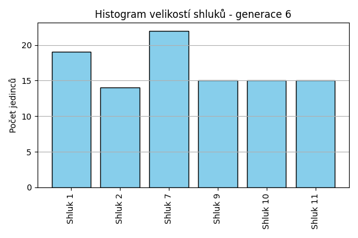
Stabilita mezi generací 5 → 6:
Shluk 1 → 1: 14 jedinců (70.0 %)
Shluk 1 → 2: 1 jedinců (5.0 %)
Shluk 1 → 11: 2 jedinců (10.0 %)
Shluk 1 → 9: 1 jedinců (5.0 %)
Shluk 1 → 7: 2 jedinců (10.0 %)
Shluk 2 → 2: 6 jedinců (31.6 %)
Shluk 2 → 7: 6 jedinců (31.6 %)
Shluk 2 → 11: 4 jedinců (21.1 %)
Shluk 2 → 10: 2 jedinců (10.5 %)
Shluk 2 → 1: 1 jedinců (5.3 %)
Shluk 10 → 1: 3 jedinců (21.4 %)
Shluk 10 → 10: 9 jedinců (64.3 %)
Shluk 10 → 7: 1 jedinců (7.1 %)
Shluk 10 → 2: 1 jedinců (7.1 %)
Shluk 11 → 11: 6 jedinců (46.2 %)
Shluk 11 → 7: 1 jedinců (7.7 %)
Shluk 11 → 2: 2 jedinců (15.4 %)
Shluk 11 → 9: 3 jedinců (23.1 %)
Shluk 11 → 10: 1 jedinců (7.7 %)
Shluk 7 → 7: 7 jedinců (53.8 %)
Shluk 7 → 9: 4 jedinců (30.8 %)
Shluk 7 → 11: 1 jedinců (7.7 %)
Shluk 7 → 2: 1 jedinců (7.7 %)
Shluk 9 → 7: 5 jedinců (23.8 %)
Shluk 9 → 2: 3 jedinců (14.3 %)
Shluk 9 → 10: 3 jedinců (14.3 %)
Shluk 9 → 9: 7 jedinců (33.3 %)
Shluk 9 → 1: 1 jedinců (4.8 %)
Shluk 9 → 11: 2 jedinců (9.5 %)
Jaccardovo mapování a overlap: Generace 5 → 6
- Cluster 1 → 1 (Jaccard: 0.56, Overlap: 0.74)
- Cluster 2 → 2 (Jaccard: 0.22, Overlap: 0.43)
- Cluster 10 → 10 (Jaccard: 0.45, Overlap: 0.64)
- Cluster 11 → 11 (Jaccard: 0.27, Overlap: 0.46)
- Cluster 7 → 7 (Jaccard: 0.25, Overlap: 0.54)
- Cluster 9 → 9 (Jaccard: 0.24, Overlap: 0.47)
Posun centroidů mezi generací 5 → 6:
- Shluk 0: 2.0861
- Shluk 1: 3.2498
- Shluk 2: 4.3469
- Shluk 3: 3.4261
- Shluk 4: 2.0257
- Shluk 5: 3.5047
Generace 7

Stabilita mezi generací 6 → 7:
Shluk 1 → 12: 5 jedinců (26.3 %)
Shluk 1 → 11: 9 jedinců (47.4 %)
Shluk 1 → 13: 2 jedinců (10.5 %)
Shluk 1 → 10: 1 jedinců (5.3 %)
Shluk 1 → 7: 2 jedinců (10.5 %)
Shluk 2 → 7: 7 jedinců (50.0 %)
Shluk 2 → 9: 2 jedinců (14.3 %)
Shluk 2 → 11: 4 jedinců (28.6 %)
Shluk 2 → 10: 1 jedinců (7.1 %)
Shluk 10 → 13: 4 jedinců (26.7 %)
Shluk 10 → 12: 4 jedinců (26.7 %)
Shluk 10 → 10: 5 jedinců (33.3 %)
Shluk 10 → 7: 2 jedinců (13.3 %)
Shluk 11 → 10: 2 jedinců (13.3 %)
Shluk 11 → 12: 2 jedinců (13.3 %)
Shluk 11 → 11: 10 jedinců (66.7 %)
Shluk 11 → 7: 1 jedinců (6.7 %)
Shluk 7 → 11: 3 jedinců (13.6 %)
Shluk 7 → 7: 11 jedinců (50.0 %)
Shluk 7 → 13: 4 jedinců (18.2 %)
Shluk 7 → 12: 2 jedinců (9.1 %)
Shluk 7 → 10: 2 jedinců (9.1 %)
Shluk 9 → 13: 5 jedinců (33.3 %)
Shluk 9 → 10: 3 jedinců (20.0 %)
Shluk 9 → 9: 6 jedinců (40.0 %)
Shluk 9 → 11: 1 jedinců (6.7 %)
Jaccardovo mapování a overlap: Generace 6 → 7
- Cluster 1 → 11 (Jaccard: 0.24, Overlap: 0.47)
- Cluster 2 → 7 (Jaccard: 0.23, Overlap: 0.50)
- Cluster 10 → 10 (Jaccard: 0.21, Overlap: 0.36)
- Cluster 11 → 11 (Jaccard: 0.31, Overlap: 0.67)
- Cluster 7 → 7 (Jaccard: 0.32, Overlap: 0.50)
- Cluster 9 → 9 (Jaccard: 0.35, Overlap: 0.75)
Posun centroidů mezi generací 6 → 7:
- Shluk 0: 5.5528
- Shluk 1: 6.2924
- Shluk 2: 5.7283
- Shluk 3: 6.1938
- Shluk 4: 3.9960
- Shluk 5: 7.0242
Generace 8
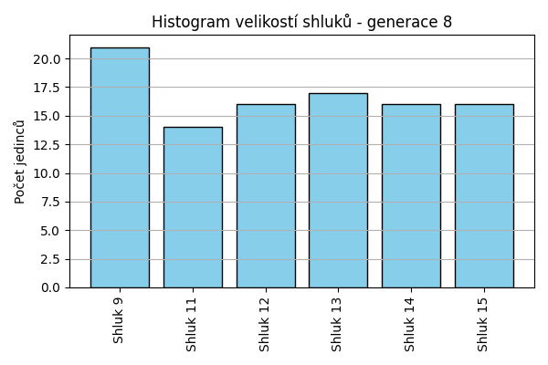
Stabilita mezi generací 7 → 8:
Shluk 12 → 12: 5 jedinců (38.5 %)
Shluk 12 → 15: 4 jedinců (30.8 %)
Shluk 12 → 13: 1 jedinců (7.7 %)
Shluk 12 → 9: 1 jedinců (7.7 %)
Shluk 12 → 14: 2 jedinců (15.4 %)
Shluk 7 → 14: 5 jedinců (21.7 %)
Shluk 7 → 13: 4 jedinců (17.4 %)
Shluk 7 → 12: 4 jedinců (17.4 %)
Shluk 7 → 11: 5 jedinců (21.7 %)
Shluk 7 → 9: 3 jedinců (13.0 %)
Shluk 7 → 15: 2 jedinců (8.7 %)
Shluk 11 → 9: 3 jedinců (11.1 %)
Shluk 11 → 11: 8 jedinců (29.6 %)
Shluk 11 → 14: 6 jedinců (22.2 %)
Shluk 11 → 12: 5 jedinců (18.5 %)
Shluk 11 → 15: 4 jedinců (14.8 %)
Shluk 11 → 13: 1 jedinců (3.7 %)
Shluk 13 → 13: 9 jedinců (60.0 %)
Shluk 13 → 9: 3 jedinců (20.0 %)
Shluk 13 → 15: 1 jedinců (6.7 %)
Shluk 13 → 12: 2 jedinců (13.3 %)
Shluk 10 → 15: 4 jedinců (28.6 %)
Shluk 10 → 11: 1 jedinců (7.1 %)
Shluk 10 → 9: 5 jedinců (35.7 %)
Shluk 10 → 14: 3 jedinců (21.4 %)
Shluk 10 → 13: 1 jedinců (7.1 %)
Shluk 9 → 15: 1 jedinců (12.5 %)
Shluk 9 → 9: 6 jedinců (75.0 %)
Shluk 9 → 13: 1 jedinců (12.5 %)
Jaccardovo mapování a overlap: Generace 7 → 8
- Cluster 12 → 12 (Jaccard: 0.21, Overlap: 0.38)
- Cluster 7 → 11 (Jaccard: 0.16, Overlap: 0.36)
- Cluster 11 → 11 (Jaccard: 0.24, Overlap: 0.57)
- Cluster 13 → 13 (Jaccard: 0.39, Overlap: 0.60)
- Cluster 10 → 9 (Jaccard: 0.17, Overlap: 0.36)
- Cluster 9 → 9 (Jaccard: 0.26, Overlap: 0.75)
Posun centroidů mezi generací 7 → 8:
- Shluk 0: 4.5159
- Shluk 1: 7.7647
- Shluk 2: 6.4861
- Shluk 3: 5.1675
- Shluk 4: 6.4750
- Shluk 5: 5.9454
Generace 9
Stabilita mezi generací 8 → 9:
Shluk 12 → 12: 4 jedinců (25.0 %)
Shluk 12 → 14: 4 jedinců (25.0 %)
Shluk 12 → 13: 4 jedinců (25.0 %)
Shluk 12 → 11: 3 jedinců (18.8 %)
Shluk 12 → 9: 1 jedinců (6.2 %)
Shluk 14 → 11: 4 jedinců (25.0 %)
Shluk 14 → 14: 6 jedinců (37.5 %)
Shluk 14 → 9: 4 jedinců (25.0 %)
Shluk 14 → 16: 1 jedinců (6.2 %)
Shluk 14 → 13: 1 jedinců (6.2 %)
Shluk 9 → 11: 1 jedinců (4.8 %)
Shluk 9 → 14: 1 jedinců (4.8 %)
Shluk 9 → 9: 17 jedinců (81.0 %)
Shluk 9 → 16: 2 jedinců (9.5 %)
Shluk 13 → 9: 2 jedinců (11.8 %)
Shluk 13 → 13: 8 jedinců (47.1 %)
Shluk 13 → 12: 1 jedinců (5.9 %)
Shluk 13 → 16: 5 jedinců (29.4 %)
Shluk 13 → 11: 1 jedinců (5.9 %)
Shluk 15 → 11: 6 jedinců (37.5 %)
Shluk 15 → 16: 3 jedinců (18.8 %)
Shluk 15 → 14: 3 jedinců (18.8 %)
Shluk 15 → 12: 2 jedinců (12.5 %)
Shluk 15 → 9: 2 jedinců (12.5 %)
Shluk 11 → 11: 6 jedinců (42.9 %)
Shluk 11 → 14: 3 jedinců (21.4 %)
Shluk 11 → 13: 5 jedinců (35.7 %)
Jaccardovo mapování a overlap: Generace 8 → 9
- Cluster 12 → 12 (Jaccard: 0.21, Overlap: 0.57)
- Cluster 14 → 14 (Jaccard: 0.22, Overlap: 0.38)
- Cluster 9 → 9 (Jaccard: 0.57, Overlap: 0.81)
- Cluster 13 → 13 (Jaccard: 0.30, Overlap: 0.47)
- Cluster 15 → 11 (Jaccard: 0.19, Overlap: 0.38)
- Cluster 11 → 11 (Jaccard: 0.21, Overlap: 0.43)
Posun centroidů mezi generací 8 → 9:
- Shluk 0: 1.6800
- Shluk 1: 3.4300
- Shluk 2: 3.4706
- Shluk 3: 2.7813
- Shluk 4: 3.8868
- Shluk 5: 4.3608
Generace 10
Stabilita mezi generací 9 → 10:
Shluk 12 → 13: 3 jedinců (42.9 %)
Shluk 12 → 11: 1 jedinců (14.3 %)
Shluk 12 → 16: 1 jedinců (14.3 %)
Shluk 12 → 17: 1 jedinců (14.3 %)
Shluk 12 → 9: 1 jedinců (14.3 %)
Shluk 11 → 11: 9 jedinců (42.9 %)
Shluk 11 → 16: 5 jedinců (23.8 %)
Shluk 11 → 17: 6 jedinců (28.6 %)
Shluk 11 → 18: 1 jedinců (4.8 %)
Shluk 9 → 16: 4 jedinců (15.4 %)
Shluk 9 → 18: 7 jedinců (26.9 %)
Shluk 9 → 9: 12 jedinců (46.2 %)
Shluk 9 → 11: 1 jedinců (3.8 %)
Shluk 9 → 13: 1 jedinců (3.8 %)
Shluk 9 → 17: 1 jedinců (3.8 %)
Shluk 14 → 16: 3 jedinců (17.6 %)
Shluk 14 → 18: 3 jedinců (17.6 %)
Shluk 14 → 17: 3 jedinců (17.6 %)
Shluk 14 → 11: 5 jedinců (29.4 %)
Shluk 14 → 9: 3 jedinců (17.6 %)
Shluk 13 → 13: 7 jedinců (38.9 %)
Shluk 13 → 9: 4 jedinců (22.2 %)
Shluk 13 → 11: 2 jedinců (11.1 %)
Shluk 13 → 17: 5 jedinců (27.8 %)
Shluk 16 → 11: 3 jedinců (27.3 %)
Shluk 16 → 18: 1 jedinců (9.1 %)
Shluk 16 → 13: 2 jedinců (18.2 %)
Shluk 16 → 16: 5 jedinců (45.5 %)
Jaccardovo mapování a overlap: Generace 9 → 10
- Cluster 12 → 13 (Jaccard: 0.18, Overlap: 0.43)
- Cluster 11 → 11 (Jaccard: 0.27, Overlap: 0.43)
- Cluster 9 → 9 (Jaccard: 0.35, Overlap: 0.60)
- Cluster 14 → 11 (Jaccard: 0.15, Overlap: 0.29)
- Cluster 13 → 13 (Jaccard: 0.29, Overlap: 0.54)
- Cluster 16 → 16 (Jaccard: 0.21, Overlap: 0.45)
Posun centroidů mezi generací 9 → 10:
- Shluk 0: 2.3367
- Shluk 1: 1.8772
- Shluk 2: 5.7990
- Shluk 3: 6.2558
- Shluk 4: 3.8114
- Shluk 5: 4.4571
Generace 11
Stabilita mezi generací 10 → 11:
Shluk 13 → 11: 1 jedinců (7.7 %)
Shluk 13 → 13: 9 jedinců (69.2 %)
Shluk 13 → 9: 2 jedinců (15.4 %)
Shluk 13 → 18: 1 jedinců (7.7 %)
Shluk 11 → 11: 11 jedinců (52.4 %)
Shluk 11 → 16: 2 jedinců (9.5 %)
Shluk 11 → 18: 2 jedinců (9.5 %)
Shluk 11 → 19: 4 jedinců (19.0 %)
Shluk 11 → 13: 2 jedinců (9.5 %)
Shluk 16 → 13: 2 jedinců (11.1 %)
Shluk 16 → 16: 10 jedinců (55.6 %)
Shluk 16 → 9: 4 jedinců (22.2 %)
Shluk 16 → 19: 2 jedinců (11.1 %)
Shluk 17 → 11: 7 jedinců (43.8 %)
Shluk 17 → 18: 4 jedinců (25.0 %)
Shluk 17 → 13: 5 jedinců (31.2 %)
Shluk 18 → 11: 1 jedinců (8.3 %)
Shluk 18 → 18: 4 jedinců (33.3 %)
Shluk 18 → 13: 2 jedinců (16.7 %)
Shluk 18 → 9: 2 jedinců (16.7 %)
Shluk 18 → 16: 1 jedinců (8.3 %)
Shluk 18 → 19: 2 jedinců (16.7 %)
Shluk 9 → 19: 4 jedinců (20.0 %)
Shluk 9 → 9: 8 jedinců (40.0 %)
Shluk 9 → 16: 1 jedinců (5.0 %)
Shluk 9 → 11: 3 jedinců (15.0 %)
Shluk 9 → 18: 4 jedinců (20.0 %)
Jaccardovo mapování a overlap: Generace 10 → 11
- Cluster 13 → 13 (Jaccard: 0.38, Overlap: 0.69)
- Cluster 11 → 11 (Jaccard: 0.33, Overlap: 0.52)
- Cluster 16 → 16 (Jaccard: 0.45, Overlap: 0.71)
- Cluster 17 → 11 (Jaccard: 0.22, Overlap: 0.44)
- Cluster 18 → 18 (Jaccard: 0.17, Overlap: 0.33)
- Cluster 9 → 9 (Jaccard: 0.29, Overlap: 0.50)
Posun centroidů mezi generací 10 → 11:
- Shluk 0: 2.4182
- Shluk 1: 2.0162
- Shluk 2: 1.3782
- Shluk 3: 0.9573
- Shluk 4: 3.7897
- Shluk 5: 3.8104
Generace 12
Stabilita mezi generací 11 → 12:
Shluk 11 → 11: 14 jedinců (60.9 %)
Shluk 11 → 16: 2 jedinců (8.7 %)
Shluk 11 → 13: 1 jedinců (4.3 %)
Shluk 11 → 20: 5 jedinců (21.7 %)
Shluk 11 → 9: 1 jedinců (4.3 %)
Shluk 13 → 9: 1 jedinců (5.0 %)
Shluk 13 → 13: 15 jedinců (75.0 %)
Shluk 13 → 20: 3 jedinců (15.0 %)
Shluk 13 → 16: 1 jedinců (5.0 %)
Shluk 16 → 16: 7 jedinců (50.0 %)
Shluk 16 → 11: 4 jedinců (28.6 %)
Shluk 16 → 9: 2 jedinců (14.3 %)
Shluk 16 → 13: 1 jedinců (7.1 %)
Shluk 9 → 11: 1 jedinců (6.2 %)
Shluk 9 → 9: 12 jedinců (75.0 %)
Shluk 9 → 16: 2 jedinců (12.5 %)
Shluk 9 → 20: 1 jedinců (6.2 %)
Shluk 18 → 18: 7 jedinců (46.7 %)
Shluk 18 → 20: 2 jedinců (13.3 %)
Shluk 18 → 13: 1 jedinců (6.7 %)
Shluk 18 → 11: 2 jedinců (13.3 %)
Shluk 18 → 16: 3 jedinců (20.0 %)
Shluk 19 → 9: 3 jedinců (25.0 %)
Shluk 19 → 16: 5 jedinců (41.7 %)
Shluk 19 → 11: 2 jedinců (16.7 %)
Shluk 19 → 20: 1 jedinců (8.3 %)
Shluk 19 → 18: 1 jedinců (8.3 %)
Jaccardovo mapování a overlap: Generace 11 → 12
- Cluster 11 → 11 (Jaccard: 0.44, Overlap: 0.61)
- Cluster 13 → 13 (Jaccard: 0.65, Overlap: 0.83)
- Cluster 16 → 16 (Jaccard: 0.26, Overlap: 0.50)
- Cluster 9 → 9 (Jaccard: 0.52, Overlap: 0.75)
- Cluster 18 → 18 (Jaccard: 0.44, Overlap: 0.88)
- Cluster 19 → 16 (Jaccard: 0.19, Overlap: 0.42)
Posun centroidů mezi generací 11 → 12:
- Shluk 0: 1.4370
- Shluk 1: 1.3515
- Shluk 2: 1.1221
- Shluk 3: 2.4554
- Shluk 4: 1.7084
- Shluk 5: 3.9070
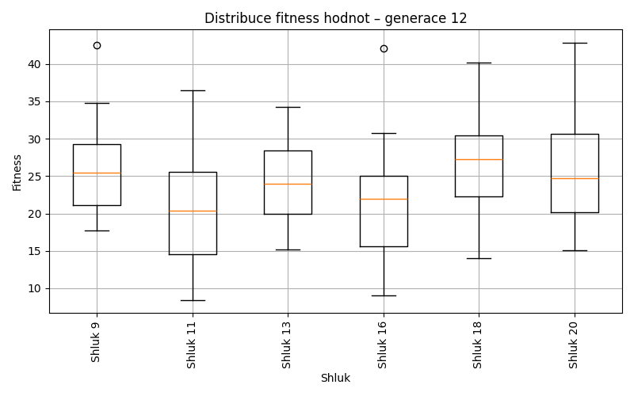
Generace 13
Stabilita mezi generací 12 → 13:
Shluk 11 → 11: 14 jedinců (60.9 %)
Shluk 11 → 16: 3 jedinců (13.0 %)
Shluk 11 → 18: 1 jedinců (4.3 %)
Shluk 11 → 13: 2 jedinců (8.7 %)
Shluk 11 → 21: 2 jedinců (8.7 %)
Shluk 11 → 9: 1 jedinců (4.3 %)
Shluk 9 → 13: 2 jedinců (10.5 %)
Shluk 9 → 21: 7 jedinců (36.8 %)
Shluk 9 → 9: 7 jedinců (36.8 %)
Shluk 9 → 11: 1 jedinců (5.3 %)
Shluk 9 → 18: 1 jedinců (5.3 %)
Shluk 9 → 16: 1 jedinců (5.3 %)
Shluk 16 → 16: 7 jedinců (35.0 %)
Shluk 16 → 21: 6 jedinců (30.0 %)
Shluk 16 → 18: 4 jedinců (20.0 %)
Shluk 16 → 11: 1 jedinců (5.0 %)
Shluk 16 → 9: 2 jedinců (10.0 %)
Shluk 18 → 18: 8 jedinců (100.0 %)
Shluk 13 → 13: 12 jedinců (66.7 %)
Shluk 13 → 18: 2 jedinců (11.1 %)
Shluk 13 → 11: 1 jedinců (5.6 %)
Shluk 13 → 9: 1 jedinců (5.6 %)
Shluk 13 → 16: 1 jedinců (5.6 %)
Shluk 13 → 21: 1 jedinců (5.6 %)
Shluk 20 → 18: 4 jedinců (33.3 %)
Shluk 20 → 11: 3 jedinců (25.0 %)
Shluk 20 → 21: 3 jedinců (25.0 %)
Shluk 20 → 13: 2 jedinců (16.7 %)
Jaccardovo mapování a overlap: Generace 12 → 13
- Cluster 11 → 11 (Jaccard: 0.48, Overlap: 0.70)
- Cluster 9 → 9 (Jaccard: 0.30, Overlap: 0.64)
- Cluster 16 → 16 (Jaccard: 0.28, Overlap: 0.58)
- Cluster 18 → 18 (Jaccard: 0.40, Overlap: 1.00)
- Cluster 13 → 13 (Jaccard: 0.50, Overlap: 0.67)
- Cluster 20 → 18 (Jaccard: 0.14, Overlap: 0.33)
Posun centroidů mezi generací 12 → 13:
- Shluk 0: 1.7124
- Shluk 1: 1.4187
- Shluk 2: 1.3451
- Shluk 3: 2.2213
- Shluk 4: 2.1491
- Shluk 5: 4.2093
Generace 14
Stabilita mezi generací 13 → 14:
Shluk 11 → 11: 8 jedinců (40.0 %)
Shluk 11 → 16: 2 jedinců (10.0 %)
Shluk 11 → 22: 2 jedinců (10.0 %)
Shluk 11 → 13: 4 jedinců (20.0 %)
Shluk 11 → 21: 4 jedinců (20.0 %)
Shluk 13 → 21: 7 jedinců (38.9 %)
Shluk 13 → 22: 2 jedinců (11.1 %)
Shluk 13 → 13: 7 jedinců (38.9 %)
Shluk 13 → 16: 2 jedinců (11.1 %)
Shluk 16 → 22: 2 jedinců (16.7 %)
Shluk 16 → 16: 9 jedinců (75.0 %)
Shluk 16 → 11: 1 jedinců (8.3 %)
Shluk 18 → 16: 4 jedinců (20.0 %)
Shluk 18 → 9: 4 jedinců (20.0 %)
Shluk 18 → 21: 4 jedinců (20.0 %)
Shluk 18 → 13: 4 jedinců (20.0 %)
Shluk 18 → 22: 4 jedinců (20.0 %)
Shluk 21 → 21: 7 jedinců (36.8 %)
Shluk 21 → 13: 2 jedinců (10.5 %)
Shluk 21 → 9: 5 jedinců (26.3 %)
Shluk 21 → 16: 1 jedinců (5.3 %)
Shluk 21 → 11: 3 jedinců (15.8 %)
Shluk 21 → 22: 1 jedinců (5.3 %)
Shluk 9 → 9: 5 jedinců (45.5 %)
Shluk 9 → 22: 5 jedinců (45.5 %)
Shluk 9 → 11: 1 jedinců (9.1 %)
Jaccardovo mapování a overlap: Generace 13 → 14
- Cluster 11 → 11 (Jaccard: 0.32, Overlap: 0.62)
- Cluster 13 → 13 (Jaccard: 0.25, Overlap: 0.41)
- Cluster 16 → 16 (Jaccard: 0.43, Overlap: 0.75)
- Cluster 18 → 9 (Jaccard: 0.13, Overlap: 0.29)
- Cluster 21 → 21 (Jaccard: 0.21, Overlap: 0.37)
- Cluster 9 → 9 (Jaccard: 0.25, Overlap: 0.45)
Posun centroidů mezi generací 13 → 14:
- Shluk 0: 2.8326
- Shluk 1: 2.2551
- Shluk 2: 2.1512
- Shluk 3: 1.5736
- Shluk 4: 3.8959
- Shluk 5: 4.4219
Generace 15
Stabilita mezi generací 14 → 15:
Shluk 11 → 11: 10 jedinců (76.9 %)
Shluk 11 → 23: 3 jedinců (23.1 %)
Shluk 16 → 9: 2 jedinců (11.1 %)
Shluk 16 → 16: 11 jedinců (61.1 %)
Shluk 16 → 13: 2 jedinců (11.1 %)
Shluk 16 → 11: 1 jedinců (5.6 %)
Shluk 16 → 23: 1 jedinců (5.6 %)
Shluk 16 → 21: 1 jedinců (5.6 %)
Shluk 22 → 13: 4 jedinců (25.0 %)
Shluk 22 → 16: 10 jedinců (62.5 %)
Shluk 22 → 9: 2 jedinců (12.5 %)
Shluk 21 → 21: 14 jedinců (63.6 %)
Shluk 21 → 9: 1 jedinců (4.5 %)
Shluk 21 → 23: 3 jedinců (13.6 %)
Shluk 21 → 13: 1 jedinců (4.5 %)
Shluk 21 → 16: 3 jedinců (13.6 %)
Shluk 9 → 9: 9 jedinců (64.3 %)
Shluk 9 → 11: 1 jedinců (7.1 %)
Shluk 9 → 23: 2 jedinců (14.3 %)
Shluk 9 → 13: 2 jedinců (14.3 %)
Shluk 13 → 13: 9 jedinců (52.9 %)
Shluk 13 → 23: 4 jedinců (23.5 %)
Shluk 13 → 21: 1 jedinců (5.9 %)
Shluk 13 → 9: 2 jedinců (11.8 %)
Shluk 13 → 16: 1 jedinců (5.9 %)
Jaccardovo mapování a overlap: Generace 14 → 15
- Cluster 11 → 11 (Jaccard: 0.67, Overlap: 0.83)
- Cluster 16 → 16 (Jaccard: 0.34, Overlap: 0.61)
- Cluster 22 → 16 (Jaccard: 0.32, Overlap: 0.62)
- Cluster 21 → 21 (Jaccard: 0.58, Overlap: 0.88)
- Cluster 9 → 9 (Jaccard: 0.43, Overlap: 0.64)
- Cluster 13 → 13 (Jaccard: 0.35, Overlap: 0.53)
Posun centroidů mezi generací 14 → 15:
- Shluk 0: 1.7941
- Shluk 1: 0.7115
- Shluk 2: 2.2097
- Shluk 3: 2.0411
- Shluk 4: 0.8335
- Shluk 5: 4.4052
Generace 16
Stabilita mezi generací 15 → 16:
Shluk 11 → 11: 9 jedinců (75.0 %)
Shluk 11 → 9: 2 jedinců (16.7 %)
Shluk 11 → 21: 1 jedinců (8.3 %)
Shluk 9 → 9: 6 jedinců (37.5 %)
Shluk 9 → 11: 2 jedinců (12.5 %)
Shluk 9 → 23: 3 jedinců (18.8 %)
Shluk 9 → 13: 2 jedinců (12.5 %)
Shluk 9 → 16: 3 jedinců (18.8 %)
Shluk 13 → 13: 13 jedinců (72.2 %)
Shluk 13 → 11: 2 jedinců (11.1 %)
Shluk 13 → 16: 2 jedinců (11.1 %)
Shluk 13 → 21: 1 jedinců (5.6 %)
Shluk 21 → 23: 2 jedinců (12.5 %)
Shluk 21 → 21: 11 jedinců (68.8 %)
Shluk 21 → 9: 2 jedinců (12.5 %)
Shluk 21 → 16: 1 jedinců (6.2 %)
Shluk 16 → 23: 7 jedinců (28.0 %)
Shluk 16 → 16: 7 jedinců (28.0 %)
Shluk 16 → 21: 2 jedinců (8.0 %)
Shluk 16 → 11: 5 jedinců (20.0 %)
Shluk 16 → 13: 2 jedinců (8.0 %)
Shluk 16 → 9: 2 jedinců (8.0 %)
Shluk 23 → 23: 7 jedinců (53.8 %)
Shluk 23 → 21: 4 jedinců (30.8 %)
Shluk 23 → 9: 1 jedinců (7.7 %)
Shluk 23 → 16: 1 jedinců (7.7 %)
Jaccardovo mapování a overlap: Generace 15 → 16
- Cluster 11 → 11 (Jaccard: 0.43, Overlap: 0.75)
- Cluster 9 → 9 (Jaccard: 0.26, Overlap: 0.46)
- Cluster 13 → 13 (Jaccard: 0.59, Overlap: 0.76)
- Cluster 21 → 21 (Jaccard: 0.46, Overlap: 0.69)
- Cluster 16 → 16 (Jaccard: 0.22, Overlap: 0.50)
- Cluster 23 → 23 (Jaccard: 0.28, Overlap: 0.54)
Posun centroidů mezi generací 15 → 16:
- Shluk 0: 2.0973
- Shluk 1: 1.8618
- Shluk 2: 0.9830
- Shluk 3: 2.2550
- Shluk 4: 1.4872
- Shluk 5: 2.2862
Generace 17
Stabilita mezi generací 16 → 17:
Shluk 11 → 11: 8 jedinců (44.4 %)
Shluk 11 → 13: 7 jedinců (38.9 %)
Shluk 11 → 21: 2 jedinců (11.1 %)
Shluk 11 → 23: 1 jedinců (5.6 %)
Shluk 9 → 9: 6 jedinců (46.2 %)
Shluk 9 → 23: 3 jedinců (23.1 %)
Shluk 9 → 21: 2 jedinců (15.4 %)
Shluk 9 → 16: 1 jedinců (7.7 %)
Shluk 9 → 13: 1 jedinců (7.7 %)
Shluk 13 → 13: 7 jedinců (41.2 %)
Shluk 13 → 23: 2 jedinců (11.8 %)
Shluk 13 → 21: 4 jedinců (23.5 %)
Shluk 13 → 9: 1 jedinců (5.9 %)
Shluk 13 → 16: 3 jedinců (17.6 %)
Shluk 23 → 21: 2 jedinců (10.5 %)
Shluk 23 → 23: 7 jedinců (36.8 %)
Shluk 23 → 9: 4 jedinců (21.1 %)
Shluk 23 → 11: 1 jedinců (5.3 %)
Shluk 23 → 13: 5 jedinců (26.3 %)
Shluk 16 → 21: 1 jedinců (7.1 %)
Shluk 16 → 16: 10 jedinců (71.4 %)
Shluk 16 → 9: 1 jedinců (7.1 %)
Shluk 16 → 23: 2 jedinců (14.3 %)
Shluk 21 → 9: 4 jedinců (21.1 %)
Shluk 21 → 21: 10 jedinců (52.6 %)
Shluk 21 → 11: 5 jedinců (26.3 %)
Jaccardovo mapování a overlap: Generace 16 → 17
- Cluster 11 → 11 (Jaccard: 0.33, Overlap: 0.57)
- Cluster 9 → 9 (Jaccard: 0.26, Overlap: 0.46)
- Cluster 13 → 13 (Jaccard: 0.23, Overlap: 0.41)
- Cluster 23 → 23 (Jaccard: 0.26, Overlap: 0.47)
- Cluster 16 → 16 (Jaccard: 0.56, Overlap: 0.71)
- Cluster 21 → 21 (Jaccard: 0.33, Overlap: 0.53)
Posun centroidů mezi generací 16 → 17:
- Shluk 0: 1.5394
- Shluk 1: 1.6210
- Shluk 2: 1.7666
- Shluk 3: 1.3331
- Shluk 4: 1.5438
- Shluk 5: 1.7238
Generace 18
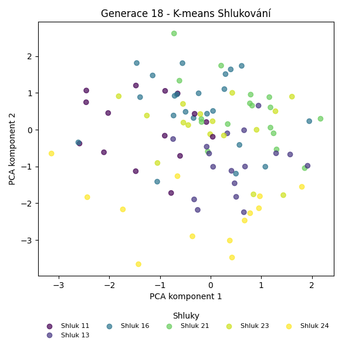
Stabilita mezi generací 17 → 18:
Shluk 11 → 24: 2 jedinců (14.3 %)
Shluk 11 → 11: 8 jedinců (57.1 %)
Shluk 11 → 23: 2 jedinců (14.3 %)
Shluk 11 → 21: 1 jedinců (7.1 %)
Shluk 11 → 16: 1 jedinců (7.1 %)
Shluk 9 → 16: 6 jedinců (37.5 %)
Shluk 9 → 13: 2 jedinců (12.5 %)
Shluk 9 → 21: 5 jedinců (31.2 %)
Shluk 9 → 11: 2 jedinců (12.5 %)
Shluk 9 → 23: 1 jedinců (6.2 %)
Shluk 13 → 13: 14 jedinců (70.0 %)
Shluk 13 → 23: 3 jedinců (15.0 %)
Shluk 13 → 24: 3 jedinců (15.0 %)
Shluk 21 → 21: 8 jedinců (38.1 %)
Shluk 21 → 24: 7 jedinců (33.3 %)
Shluk 21 → 11: 3 jedinců (14.3 %)
Shluk 21 → 16: 3 jedinců (14.3 %)
Shluk 23 → 24: 1 jedinců (6.7 %)
Shluk 23 → 23: 9 jedinců (60.0 %)
Shluk 23 → 16: 2 jedinců (13.3 %)
Shluk 23 → 13: 1 jedinců (6.7 %)
Shluk 23 → 21: 1 jedinců (6.7 %)
Shluk 23 → 11: 1 jedinců (6.7 %)
Shluk 16 → 16: 10 jedinců (71.4 %)
Shluk 16 → 21: 2 jedinců (14.3 %)
Shluk 16 → 11: 1 jedinců (7.1 %)
Shluk 16 → 23: 1 jedinců (7.1 %)
Jaccardovo mapování a overlap: Generace 17 → 18
- Cluster 11 → 11 (Jaccard: 0.38, Overlap: 0.57)
- Cluster 9 → 16 (Jaccard: 0.19, Overlap: 0.38)
- Cluster 13 → 13 (Jaccard: 0.61, Overlap: 0.82)
- Cluster 21 → 21 (Jaccard: 0.27, Overlap: 0.47)
- Cluster 23 → 23 (Jaccard: 0.41, Overlap: 0.60)
- Cluster 16 → 16 (Jaccard: 0.38, Overlap: 0.71)
Posun centroidů mezi generací 17 → 18:
- Shluk 0: 2.7276
- Shluk 1: 3.0961
- Shluk 2: 3.5172
- Shluk 3: 3.6336
- Shluk 4: 3.5639
- Shluk 5: 4.2247
Generace 19
Stabilita mezi generací 18 → 19:
Shluk 24 → 24: 9 jedinců (69.2 %)
Shluk 24 → 23: 3 jedinců (23.1 %)
Shluk 24 → 21: 1 jedinců (7.7 %)
Shluk 16 → 16: 15 jedinců (68.2 %)
Shluk 16 → 25: 2 jedinců (9.1 %)
Shluk 16 → 21: 4 jedinců (18.2 %)
Shluk 16 → 24: 1 jedinců (4.5 %)
Shluk 13 → 24: 2 jedinců (11.8 %)
Shluk 13 → 23: 4 jedinců (23.5 %)
Shluk 13 → 13: 11 jedinců (64.7 %)
Shluk 21 → 25: 4 jedinců (23.5 %)
Shluk 21 → 21: 10 jedinců (58.8 %)
Shluk 21 → 24: 1 jedinců (5.9 %)
Shluk 21 → 13: 2 jedinců (11.8 %)
Shluk 23 → 25: 2 jedinců (12.5 %)
Shluk 23 → 23: 7 jedinců (43.8 %)
Shluk 23 → 21: 3 jedinců (18.8 %)
Shluk 23 → 13: 2 jedinců (12.5 %)
Shluk 23 → 24: 1 jedinců (6.2 %)
Shluk 23 → 16: 1 jedinců (6.2 %)
Shluk 11 → 13: 10 jedinců (66.7 %)
Shluk 11 → 25: 4 jedinců (26.7 %)
Shluk 11 → 21: 1 jedinců (6.7 %)
Jaccardovo mapování a overlap: Generace 18 → 19
- Cluster 24 → 24 (Jaccard: 0.50, Overlap: 0.69)
- Cluster 16 → 16 (Jaccard: 0.65, Overlap: 0.94)
- Cluster 13 → 13 (Jaccard: 0.35, Overlap: 0.65)
- Cluster 21 → 21 (Jaccard: 0.38, Overlap: 0.59)
- Cluster 23 → 23 (Jaccard: 0.30, Overlap: 0.50)
- Cluster 11 → 13 (Jaccard: 0.33, Overlap: 0.67)
Posun centroidů mezi generací 18 → 19:
- Shluk 0: 1.5378
- Shluk 1: 3.4288
- Shluk 2: 2.3896
- Shluk 3: 3.6454
- Shluk 4: 3.2630
- Shluk 5: 4.1780
Generace 20
Stabilita mezi generací 19 → 20:
Shluk 24 → 23: 6 jedinců (42.9 %)
Shluk 24 → 26: 2 jedinců (14.3 %)
Shluk 24 → 13: 2 jedinců (14.3 %)
Shluk 24 → 21: 1 jedinců (7.1 %)
Shluk 24 → 27: 3 jedinců (21.4 %)
Shluk 16 → 16: 7 jedinců (43.8 %)
Shluk 16 → 23: 3 jedinců (18.8 %)
Shluk 16 → 21: 5 jedinců (31.2 %)
Shluk 16 → 26: 1 jedinců (6.2 %)
Shluk 25 → 26: 2 jedinců (16.7 %)
Shluk 25 → 13: 5 jedinců (41.7 %)
Shluk 25 → 27: 2 jedinců (16.7 %)
Shluk 25 → 16: 2 jedinců (16.7 %)
Shluk 25 → 23: 1 jedinců (8.3 %)
Shluk 21 → 21: 8 jedinců (42.1 %)
Shluk 21 → 26: 6 jedinců (31.6 %)
Shluk 21 → 16: 2 jedinců (10.5 %)
Shluk 21 → 27: 2 jedinců (10.5 %)
Shluk 21 → 23: 1 jedinců (5.3 %)
Shluk 23 → 27: 3 jedinců (21.4 %)
Shluk 23 → 23: 7 jedinců (50.0 %)
Shluk 23 → 13: 2 jedinců (14.3 %)
Shluk 23 → 21: 1 jedinců (7.1 %)
Shluk 23 → 26: 1 jedinců (7.1 %)
Shluk 13 → 13: 15 jedinců (60.0 %)
Shluk 13 → 23: 4 jedinců (16.0 %)
Shluk 13 → 16: 2 jedinců (8.0 %)
Shluk 13 → 26: 1 jedinců (4.0 %)
Shluk 13 → 27: 3 jedinců (12.0 %)
Jaccardovo mapování a overlap: Generace 19 → 20
- Cluster 24 → 23 (Jaccard: 0.20, Overlap: 0.43)
- Cluster 16 → 16 (Jaccard: 0.32, Overlap: 0.54)
- Cluster 25 → 13 (Jaccard: 0.16, Overlap: 0.42)
- Cluster 21 → 21 (Jaccard: 0.31, Overlap: 0.53)
- Cluster 23 → 23 (Jaccard: 0.24, Overlap: 0.50)
- Cluster 13 → 13 (Jaccard: 0.44, Overlap: 0.62)
Posun centroidů mezi generací 19 → 20:
- Shluk 0: 1.1952
- Shluk 1: 1.9299
- Shluk 2: 1.4189
- Shluk 3: 1.2067
- Shluk 4: 3.1468
- Shluk 5: 3.4102
Generace 21
Stabilita mezi generací 20 → 21:
Shluk 23 → 27: 3 jedinců (13.6 %)
Shluk 23 → 28: 5 jedinců (22.7 %)
Shluk 23 → 13: 2 jedinců (9.1 %)
Shluk 23 → 21: 5 jedinců (22.7 %)
Shluk 23 → 23: 7 jedinců (31.8 %)
Shluk 16 → 26: 4 jedinců (30.8 %)
Shluk 16 → 27: 3 jedinců (23.1 %)
Shluk 16 → 13: 2 jedinců (15.4 %)
Shluk 16 → 28: 4 jedinců (30.8 %)
Shluk 26 → 28: 3 jedinců (23.1 %)
Shluk 26 → 26: 7 jedinců (53.8 %)
Shluk 26 → 21: 3 jedinců (23.1 %)
Shluk 21 → 27: 2 jedinců (13.3 %)
Shluk 21 → 28: 5 jedinců (33.3 %)
Shluk 21 → 21: 5 jedinců (33.3 %)
Shluk 21 → 23: 2 jedinců (13.3 %)
Shluk 21 → 26: 1 jedinců (6.7 %)
Shluk 27 → 27: 6 jedinců (46.2 %)
Shluk 27 → 26: 1 jedinců (7.7 %)
Shluk 27 → 28: 2 jedinců (15.4 %)
Shluk 27 → 23: 1 jedinců (7.7 %)
Shluk 27 → 13: 3 jedinců (23.1 %)
Shluk 13 → 21: 6 jedinců (25.0 %)
Shluk 13 → 26: 1 jedinců (4.2 %)
Shluk 13 → 23: 7 jedinců (29.2 %)
Shluk 13 → 27: 2 jedinců (8.3 %)
Shluk 13 → 13: 7 jedinců (29.2 %)
Shluk 13 → 28: 1 jedinců (4.2 %)
Jaccardovo mapování a overlap: Generace 20 → 21
- Cluster 23 → 23 (Jaccard: 0.22, Overlap: 0.41)
- Cluster 16 → 26 (Jaccard: 0.17, Overlap: 0.31)
- Cluster 26 → 26 (Jaccard: 0.35, Overlap: 0.54)
- Cluster 21 → 21 (Jaccard: 0.17, Overlap: 0.33)
- Cluster 27 → 27 (Jaccard: 0.26, Overlap: 0.46)
- Cluster 13 → 13 (Jaccard: 0.23, Overlap: 0.50)
Posun centroidů mezi generací 20 → 21:
- Shluk 0: 1.4426
- Shluk 1: 3.3320
- Shluk 2: 3.3795
- Shluk 3: 3.1224
- Shluk 4: 3.2465
- Shluk 5: 2.5772
Generace 22
Stabilita mezi generací 21 → 22:
Shluk 27 → 21: 3 jedinců (18.8 %)
Shluk 27 → 27: 5 jedinců (31.2 %)
Shluk 27 → 28: 1 jedinců (6.2 %)
Shluk 27 → 13: 5 jedinců (31.2 %)
Shluk 27 → 26: 2 jedinců (12.5 %)
Shluk 26 → 21: 1 jedinců (7.1 %)
Shluk 26 → 13: 4 jedinců (28.6 %)
Shluk 26 → 26: 9 jedinců (64.3 %)
Shluk 28 → 23: 3 jedinců (15.0 %)
Shluk 28 → 28: 6 jedinců (30.0 %)
Shluk 28 → 13: 1 jedinců (5.0 %)
Shluk 28 → 21: 7 jedinců (35.0 %)
Shluk 28 → 26: 2 jedinců (10.0 %)
Shluk 28 → 27: 1 jedinců (5.0 %)
Shluk 21 → 23: 3 jedinců (15.8 %)
Shluk 21 → 13: 1 jedinců (5.3 %)
Shluk 21 → 21: 8 jedinců (42.1 %)
Shluk 21 → 26: 5 jedinců (26.3 %)
Shluk 21 → 27: 2 jedinců (10.5 %)
Shluk 23 → 27: 4 jedinců (23.5 %)
Shluk 23 → 21: 2 jedinců (11.8 %)
Shluk 23 → 23: 7 jedinců (41.2 %)
Shluk 23 → 13: 2 jedinců (11.8 %)
Shluk 23 → 28: 1 jedinců (5.9 %)
Shluk 23 → 26: 1 jedinců (5.9 %)
Shluk 13 → 27: 6 jedinců (42.9 %)
Shluk 13 → 13: 7 jedinců (50.0 %)
Shluk 13 → 26: 1 jedinců (7.1 %)
Jaccardovo mapování a overlap: Generace 21 → 22
- Cluster 27 → 27 (Jaccard: 0.17, Overlap: 0.31)
- Cluster 26 → 26 (Jaccard: 0.36, Overlap: 0.64)
- Cluster 28 → 28 (Jaccard: 0.27, Overlap: 0.75)
- Cluster 21 → 21 (Jaccard: 0.25, Overlap: 0.42)
- Cluster 23 → 23 (Jaccard: 0.30, Overlap: 0.54)
- Cluster 13 → 13 (Jaccard: 0.26, Overlap: 0.50)
Posun centroidů mezi generací 21 → 22:
- Shluk 0: 1.4499
- Shluk 1: 1.6868
- Shluk 2: 1.3107
- Shluk 3: 1.1623
- Shluk 4: 1.8607
- Shluk 5: 1.4541
Generace 23
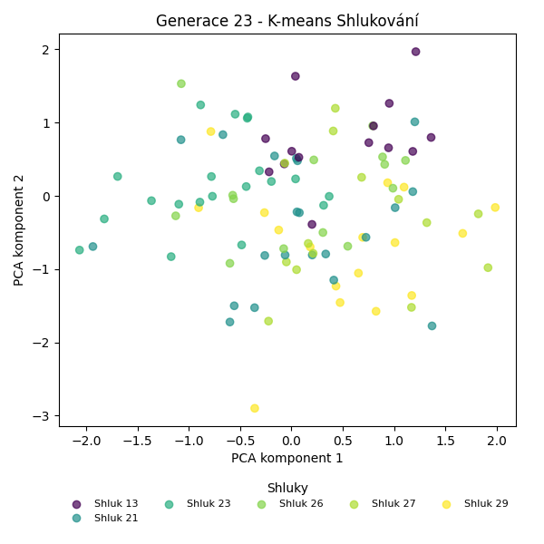
Stabilita mezi generací 22 → 23:
Shluk 21 → 29: 5 jedinců (23.8 %)
Shluk 21 → 21: 11 jedinců (52.4 %)
Shluk 21 → 26: 2 jedinců (9.5 %)
Shluk 21 → 23: 3 jedinců (14.3 %)
Shluk 27 → 27: 9 jedinců (50.0 %)
Shluk 27 → 23: 5 jedinců (27.8 %)
Shluk 27 → 26: 3 jedinců (16.7 %)
Shluk 27 → 29: 1 jedinců (5.6 %)
Shluk 23 → 26: 2 jedinců (15.4 %)
Shluk 23 → 23: 9 jedinců (69.2 %)
Shluk 23 → 21: 1 jedinců (7.7 %)
Shluk 23 → 29: 1 jedinců (7.7 %)
Shluk 28 → 29: 2 jedinců (25.0 %)
Shluk 28 → 21: 5 jedinců (62.5 %)
Shluk 28 → 27: 1 jedinců (12.5 %)
Shluk 13 → 13: 10 jedinců (50.0 %)
Shluk 13 → 29: 5 jedinců (25.0 %)
Shluk 13 → 21: 2 jedinců (10.0 %)
Shluk 13 → 23: 1 jedinců (5.0 %)
Shluk 13 → 27: 2 jedinců (10.0 %)
Shluk 26 → 26: 7 jedinců (35.0 %)
Shluk 26 → 27: 2 jedinců (10.0 %)
Shluk 26 → 21: 2 jedinců (10.0 %)
Shluk 26 → 29: 3 jedinců (15.0 %)
Shluk 26 → 13: 4 jedinců (20.0 %)
Shluk 26 → 23: 2 jedinců (10.0 %)
Jaccardovo mapování a overlap: Generace 22 → 23
- Cluster 21 → 21 (Jaccard: 0.35, Overlap: 0.52)
- Cluster 27 → 27 (Jaccard: 0.39, Overlap: 0.64)
- Cluster 23 → 23 (Jaccard: 0.38, Overlap: 0.69)
- Cluster 28 → 21 (Jaccard: 0.21, Overlap: 0.62)
- Cluster 13 → 13 (Jaccard: 0.42, Overlap: 0.71)
- Cluster 26 → 26 (Jaccard: 0.26, Overlap: 0.50)
Posun centroidů mezi generací 22 → 23:
- Shluk 0: 0.9871
- Shluk 1: 1.0377
- Shluk 2: 1.1445
- Shluk 3: 1.6297
- Shluk 4: 0.8423
- Shluk 5: 3.0904
Generace 24
Stabilita mezi generací 23 → 24:
Shluk 29 → 30: 2 jedinců (11.8 %)
Shluk 29 → 29: 9 jedinců (52.9 %)
Shluk 29 → 26: 1 jedinců (5.9 %)
Shluk 29 → 31: 4 jedinců (23.5 %)
Shluk 29 → 27: 1 jedinců (5.9 %)
Shluk 21 → 21: 12 jedinců (57.1 %)
Shluk 21 → 30: 4 jedinců (19.0 %)
Shluk 21 → 29: 3 jedinců (14.3 %)
Shluk 21 → 26: 2 jedinců (9.5 %)
Shluk 27 → 27: 6 jedinců (42.9 %)
Shluk 27 → 30: 3 jedinců (21.4 %)
Shluk 27 → 29: 2 jedinců (14.3 %)
Shluk 27 → 26: 1 jedinců (7.1 %)
Shluk 27 → 31: 1 jedinců (7.1 %)
Shluk 27 → 21: 1 jedinců (7.1 %)
Shluk 26 → 31: 6 jedinců (42.9 %)
Shluk 26 → 26: 8 jedinců (57.1 %)
Shluk 23 → 30: 1 jedinců (5.0 %)
Shluk 23 → 31: 3 jedinců (15.0 %)
Shluk 23 → 27: 7 jedinců (35.0 %)
Shluk 23 → 21: 4 jedinců (20.0 %)
Shluk 23 → 26: 4 jedinců (20.0 %)
Shluk 23 → 29: 1 jedinců (5.0 %)
Shluk 13 → 29: 7 jedinců (50.0 %)
Shluk 13 → 21: 2 jedinců (14.3 %)
Shluk 13 → 30: 1 jedinců (7.1 %)
Shluk 13 → 31: 1 jedinců (7.1 %)
Shluk 13 → 26: 3 jedinců (21.4 %)
Jaccardovo mapování a overlap: Generace 23 → 24
- Cluster 29 → 29 (Jaccard: 0.30, Overlap: 0.53)
- Cluster 21 → 21 (Jaccard: 0.43, Overlap: 0.63)
- Cluster 27 → 27 (Jaccard: 0.27, Overlap: 0.43)
- Cluster 26 → 26 (Jaccard: 0.32, Overlap: 0.57)
- Cluster 23 → 27 (Jaccard: 0.26, Overlap: 0.50)
- Cluster 13 → 29 (Jaccard: 0.24, Overlap: 0.50)
Posun centroidů mezi generací 23 → 24:
- Shluk 0: 2.5997
- Shluk 1: 1.9900
- Shluk 2: 1.4441
- Shluk 3: 2.0362
- Shluk 4: 1.8379
- Shluk 5: 1.9043
Generace 25
Stabilita mezi generací 24 → 25:
Shluk 30 → 32: 2 jedinců (18.2 %)
Shluk 30 → 26: 3 jedinců (27.3 %)
Shluk 30 → 29: 2 jedinců (18.2 %)
Shluk 30 → 21: 1 jedinců (9.1 %)
Shluk 30 → 31: 1 jedinců (9.1 %)
Shluk 30 → 27: 2 jedinců (18.2 %)
Shluk 21 → 21: 9 jedinců (47.4 %)
Shluk 21 → 26: 5 jedinců (26.3 %)
Shluk 21 → 29: 1 jedinců (5.3 %)
Shluk 21 → 32: 2 jedinců (10.5 %)
Shluk 21 → 31: 2 jedinců (10.5 %)
Shluk 27 → 27: 10 jedinců (71.4 %)
Shluk 27 → 31: 4 jedinců (28.6 %)
Shluk 31 → 32: 5 jedinců (33.3 %)
Shluk 31 → 31: 6 jedinců (40.0 %)
Shluk 31 → 29: 3 jedinců (20.0 %)
Shluk 31 → 27: 1 jedinců (6.7 %)
Shluk 29 → 29: 14 jedinců (63.6 %)
Shluk 29 → 32: 5 jedinců (22.7 %)
Shluk 29 → 31: 2 jedinců (9.1 %)
Shluk 29 → 27: 1 jedinců (4.5 %)
Shluk 26 → 26: 14 jedinců (73.7 %)
Shluk 26 → 32: 3 jedinců (15.8 %)
Shluk 26 → 21: 1 jedinců (5.3 %)
Shluk 26 → 29: 1 jedinců (5.3 %)
Jaccardovo mapování a overlap: Generace 24 → 25
- Cluster 30 → 26 (Jaccard: 0.10, Overlap: 0.27)
- Cluster 21 → 21 (Jaccard: 0.43, Overlap: 0.82)
- Cluster 27 → 27 (Jaccard: 0.56, Overlap: 0.71)
- Cluster 31 → 31 (Jaccard: 0.25, Overlap: 0.40)
- Cluster 29 → 29 (Jaccard: 0.48, Overlap: 0.67)
- Cluster 26 → 26 (Jaccard: 0.52, Overlap: 0.74)
Posun centroidů mezi generací 24 → 25:
- Shluk 0: 0.8832
- Shluk 1: 0.7636
- Shluk 2: 0.5280
- Shluk 3: 0.6957
- Shluk 4: 2.5194
- Shluk 5: 1.6337
Generace 26
Stabilita mezi generací 25 → 26:
Shluk 32 → 32: 5 jedinců (29.4 %)
Shluk 32 → 26: 1 jedinců (5.9 %)
Shluk 32 → 29: 3 jedinců (17.6 %)
Shluk 32 → 31: 3 jedinců (17.6 %)
Shluk 32 → 33: 4 jedinců (23.5 %)
Shluk 32 → 27: 1 jedinců (5.9 %)
Shluk 21 → 26: 2 jedinců (18.2 %)
Shluk 21 → 29: 2 jedinců (18.2 %)
Shluk 21 → 31: 5 jedinců (45.5 %)
Shluk 21 → 32: 2 jedinců (18.2 %)
Shluk 27 → 32: 2 jedinců (14.3 %)
Shluk 27 → 27: 7 jedinců (50.0 %)
Shluk 27 → 31: 3 jedinců (21.4 %)
Shluk 27 → 26: 1 jedinců (7.1 %)
Shluk 27 → 33: 1 jedinců (7.1 %)
Shluk 29 → 29: 18 jedinců (85.7 %)
Shluk 29 → 33: 1 jedinců (4.8 %)
Shluk 29 → 26: 1 jedinců (4.8 %)
Shluk 29 → 31: 1 jedinců (4.8 %)
Shluk 26 → 31: 2 jedinců (9.1 %)
Shluk 26 → 33: 9 jedinců (40.9 %)
Shluk 26 → 26: 11 jedinců (50.0 %)
Shluk 31 → 33: 2 jedinců (13.3 %)
Shluk 31 → 31: 6 jedinců (40.0 %)
Shluk 31 → 29: 2 jedinců (13.3 %)
Shluk 31 → 27: 4 jedinců (26.7 %)
Shluk 31 → 32: 1 jedinců (6.7 %)
Jaccardovo mapování a overlap: Generace 25 → 26
- Cluster 32 → 32 (Jaccard: 0.23, Overlap: 0.50)
- Cluster 21 → 31 (Jaccard: 0.19, Overlap: 0.45)
- Cluster 27 → 27 (Jaccard: 0.37, Overlap: 0.58)
- Cluster 29 → 29 (Jaccard: 0.64, Overlap: 0.86)
- Cluster 26 → 26 (Jaccard: 0.41, Overlap: 0.69)
- Cluster 31 → 31 (Jaccard: 0.21, Overlap: 0.40)
Posun centroidů mezi generací 25 → 26:
- Shluk 0: 1.8597
- Shluk 1: 2.6114
- Shluk 2: 2.7051
- Shluk 3: 2.0925
- Shluk 4: 2.3569
- Shluk 5: 1.8620
Generace 27
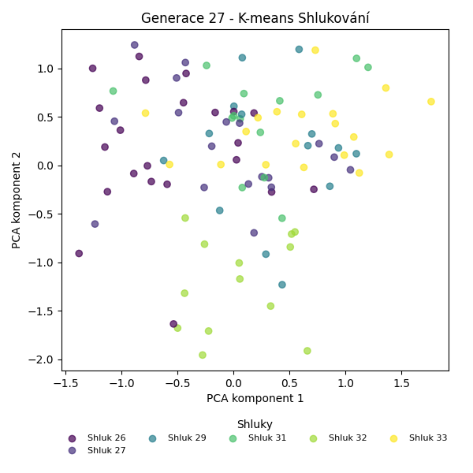
Stabilita mezi generací 26 → 27:
Shluk 32 → 32: 10 jedinců (100.0 %)
Shluk 26 → 32: 1 jedinců (6.2 %)
Shluk 26 → 31: 1 jedinců (6.2 %)
Shluk 26 → 26: 14 jedinců (87.5 %)
Shluk 29 → 29: 12 jedinců (48.0 %)
Shluk 29 → 27: 2 jedinců (8.0 %)
Shluk 29 → 33: 6 jedinců (24.0 %)
Shluk 29 → 26: 3 jedinců (12.0 %)
Shluk 29 → 31: 2 jedinců (8.0 %)
Shluk 31 → 31: 9 jedinců (45.0 %)
Shluk 31 → 33: 3 jedinců (15.0 %)
Shluk 31 → 27: 7 jedinců (35.0 %)
Shluk 31 → 29: 1 jedinců (5.0 %)
Shluk 33 → 31: 2 jedinců (11.8 %)
Shluk 33 → 33: 10 jedinců (58.8 %)
Shluk 33 → 29: 1 jedinců (5.9 %)
Shluk 33 → 26: 2 jedinců (11.8 %)
Shluk 33 → 32: 1 jedinců (5.9 %)
Shluk 33 → 27: 1 jedinců (5.9 %)
Shluk 27 → 27: 8 jedinců (66.7 %)
Shluk 27 → 26: 3 jedinců (25.0 %)
Shluk 27 → 32: 1 jedinců (8.3 %)
Jaccardovo mapování a overlap: Generace 26 → 27
- Cluster 32 → 32 (Jaccard: 0.77, Overlap: 1.00)
- Cluster 26 → 26 (Jaccard: 0.58, Overlap: 0.88)
- Cluster 29 → 29 (Jaccard: 0.44, Overlap: 0.86)
- Cluster 31 → 31 (Jaccard: 0.36, Overlap: 0.64)
- Cluster 33 → 33 (Jaccard: 0.38, Overlap: 0.59)
- Cluster 27 → 27 (Jaccard: 0.36, Overlap: 0.67)
Posun centroidů mezi generací 26 → 27:
- Shluk 0: 0.5862
- Shluk 1: 1.0030
- Shluk 2: 0.5529
- Shluk 3: 0.8779
- Shluk 4: 0.3081
- Shluk 5: 1.0003
Generace 28
Stabilita mezi generací 27 → 28:
Shluk 32 → 32: 12 jedinců (92.3 %)
Shluk 32 → 33: 1 jedinců (7.7 %)
Shluk 29 → 31: 4 jedinců (28.6 %)
Shluk 29 → 27: 1 jedinců (7.1 %)
Shluk 29 → 33: 7 jedinců (50.0 %)
Shluk 29 → 34: 2 jedinců (14.3 %)
Shluk 31 → 31: 8 jedinců (57.1 %)
Shluk 31 → 27: 4 jedinců (28.6 %)
Shluk 31 → 33: 1 jedinců (7.1 %)
Shluk 31 → 32: 1 jedinců (7.1 %)
Shluk 27 → 27: 10 jedinců (55.6 %)
Shluk 27 → 34: 5 jedinců (27.8 %)
Shluk 27 → 31: 1 jedinců (5.6 %)
Shluk 27 → 32: 2 jedinců (11.1 %)
Shluk 33 → 33: 9 jedinců (47.4 %)
Shluk 33 → 34: 4 jedinců (21.1 %)
Shluk 33 → 27: 1 jedinců (5.3 %)
Shluk 33 → 31: 1 jedinců (5.3 %)
Shluk 33 → 32: 4 jedinců (21.1 %)
Shluk 26 → 34: 2 jedinců (9.1 %)
Shluk 26 → 26: 14 jedinců (63.6 %)
Shluk 26 → 32: 2 jedinců (9.1 %)
Shluk 26 → 27: 1 jedinců (4.5 %)
Shluk 26 → 31: 2 jedinců (9.1 %)
Shluk 26 → 33: 1 jedinců (4.5 %)
Jaccardovo mapování a overlap: Generace 27 → 28
- Cluster 32 → 32 (Jaccard: 0.55, Overlap: 0.92)
- Cluster 29 → 33 (Jaccard: 0.27, Overlap: 0.50)
- Cluster 31 → 31 (Jaccard: 0.36, Overlap: 0.57)
- Cluster 27 → 27 (Jaccard: 0.40, Overlap: 0.59)
- Cluster 33 → 33 (Jaccard: 0.31, Overlap: 0.47)
- Cluster 26 → 26 (Jaccard: 0.64, Overlap: 1.00)
Posun centroidů mezi generací 27 → 28:
- Shluk 0: 0.5092
- Shluk 1: 0.8403
- Shluk 2: 1.8425
- Shluk 3: 1.9586
- Shluk 4: 2.4749
- Shluk 5: 1.7105
Generace 29
Stabilita mezi generací 28 → 29:
Shluk 32 → 32: 8 jedinců (38.1 %)
Shluk 32 → 33: 6 jedinců (28.6 %)
Shluk 32 → 34: 1 jedinců (4.8 %)
Shluk 32 → 26: 6 jedinců (28.6 %)
Shluk 31 → 34: 3 jedinců (18.8 %)
Shluk 31 → 33: 3 jedinců (18.8 %)
Shluk 31 → 26: 1 jedinců (6.2 %)
Shluk 31 → 31: 6 jedinců (37.5 %)
Shluk 31 → 32: 3 jedinců (18.8 %)
Shluk 27 → 31: 5 jedinců (29.4 %)
Shluk 27 → 27: 9 jedinců (52.9 %)
Shluk 27 → 26: 1 jedinců (5.9 %)
Shluk 27 → 32: 2 jedinců (11.8 %)
Shluk 33 → 33: 7 jedinců (36.8 %)
Shluk 33 → 34: 6 jedinců (31.6 %)
Shluk 33 → 31: 6 jedinců (31.6 %)
Shluk 34 → 34: 11 jedinců (84.6 %)
Shluk 34 → 31: 2 jedinců (15.4 %)
Shluk 26 → 26: 13 jedinců (92.9 %)
Shluk 26 → 27: 1 jedinců (7.1 %)
Jaccardovo mapování a overlap: Generace 28 → 29
- Cluster 32 → 32 (Jaccard: 0.31, Overlap: 0.62)
- Cluster 31 → 31 (Jaccard: 0.21, Overlap: 0.38)
- Cluster 27 → 27 (Jaccard: 0.50, Overlap: 0.90)
- Cluster 33 → 33 (Jaccard: 0.25, Overlap: 0.44)
- Cluster 34 → 34 (Jaccard: 0.48, Overlap: 0.85)
- Cluster 26 → 26 (Jaccard: 0.59, Overlap: 0.93)
Posun centroidů mezi generací 28 → 29:
- Shluk 0: 0.6475
- Shluk 1: 1.0451
- Shluk 2: 1.4430
- Shluk 3: 1.1299
- Shluk 4: 1.1454
- Shluk 5: 0.7915
Generace 30
Stabilita mezi generací 29 → 30:
Shluk 32 → 32: 8 jedinců (61.5 %)
Shluk 32 → 33: 1 jedinců (7.7 %)
Shluk 32 → 27: 1 jedinců (7.7 %)
Shluk 32 → 31: 2 jedinců (15.4 %)
Shluk 32 → 34: 1 jedinců (7.7 %)
Shluk 34 → 32: 4 jedinců (19.0 %)
Shluk 34 → 27: 4 jedinců (19.0 %)
Shluk 34 → 34: 7 jedinců (33.3 %)
Shluk 34 → 31: 4 jedinců (19.0 %)
Shluk 34 → 26: 1 jedinců (4.8 %)
Shluk 34 → 33: 1 jedinců (4.8 %)
Shluk 33 → 27: 2 jedinců (12.5 %)
Shluk 33 → 33: 10 jedinců (62.5 %)
Shluk 33 → 31: 2 jedinců (12.5 %)
Shluk 33 → 34: 1 jedinců (6.2 %)
Shluk 33 → 32: 1 jedinců (6.2 %)
Shluk 26 → 33: 3 jedinců (14.3 %)
Shluk 26 → 26: 13 jedinců (61.9 %)
Shluk 26 → 34: 1 jedinců (4.8 %)
Shluk 26 → 27: 1 jedinců (4.8 %)
Shluk 26 → 32: 2 jedinců (9.5 %)
Shluk 26 → 31: 1 jedinců (4.8 %)
Shluk 31 → 31: 11 jedinců (57.9 %)
Shluk 31 → 33: 5 jedinců (26.3 %)
Shluk 31 → 34: 1 jedinců (5.3 %)
Shluk 31 → 32: 2 jedinců (10.5 %)
Shluk 27 → 27: 9 jedinců (90.0 %)
Shluk 27 → 31: 1 jedinců (10.0 %)
Jaccardovo mapování a overlap: Generace 29 → 30
- Cluster 32 → 32 (Jaccard: 0.36, Overlap: 0.62)
- Cluster 34 → 34 (Jaccard: 0.28, Overlap: 0.64)
- Cluster 33 → 33 (Jaccard: 0.38, Overlap: 0.62)
- Cluster 26 → 26 (Jaccard: 0.59, Overlap: 0.93)
- Cluster 31 → 31 (Jaccard: 0.38, Overlap: 0.58)
- Cluster 27 → 27 (Jaccard: 0.50, Overlap: 0.90)
Posun centroidů mezi generací 29 → 30:
- Shluk 0: 0.2242
- Shluk 1: 0.7145
- Shluk 2: 0.9289
- Shluk 3: 0.9159
- Shluk 4: 0.8036
- Shluk 5: 0.8128
Generace 31
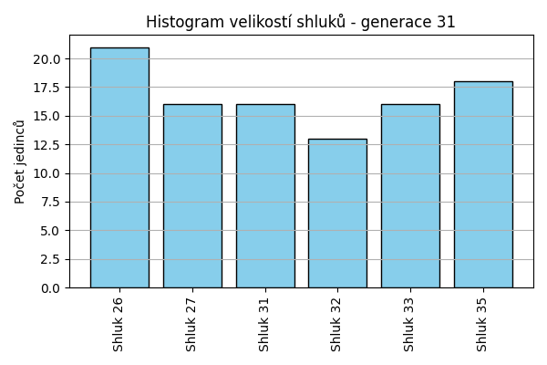
Stabilita mezi generací 30 → 31:
Shluk 32 → 27: 4 jedinců (23.5 %)
Shluk 32 → 26: 2 jedinců (11.8 %)
Shluk 32 → 32: 7 jedinců (41.2 %)
Shluk 32 → 31: 1 jedinců (5.9 %)
Shluk 32 → 35: 3 jedinců (17.6 %)
Shluk 33 → 33: 13 jedinců (65.0 %)
Shluk 33 → 32: 4 jedinců (20.0 %)
Shluk 33 → 26: 2 jedinců (10.0 %)
Shluk 33 → 31: 1 jedinců (5.0 %)
Shluk 27 → 35: 5 jedinců (29.4 %)
Shluk 27 → 27: 10 jedinců (58.8 %)
Shluk 27 → 26: 2 jedinců (11.8 %)
Shluk 31 → 33: 1 jedinců (4.8 %)
Shluk 31 → 31: 9 jedinců (42.9 %)
Shluk 31 → 35: 8 jedinců (38.1 %)
Shluk 31 → 32: 1 jedinců (4.8 %)
Shluk 31 → 27: 1 jedinců (4.8 %)
Shluk 31 → 26: 1 jedinců (4.8 %)
Shluk 34 → 31: 5 jedinců (45.5 %)
Shluk 34 → 27: 1 jedinců (9.1 %)
Shluk 34 → 26: 2 jedinců (18.2 %)
Shluk 34 → 32: 1 jedinců (9.1 %)
Shluk 34 → 35: 2 jedinců (18.2 %)
Shluk 26 → 26: 12 jedinců (85.7 %)
Shluk 26 → 33: 2 jedinců (14.3 %)
Jaccardovo mapování a overlap: Generace 30 → 31
- Cluster 32 → 32 (Jaccard: 0.30, Overlap: 0.54)
- Cluster 33 → 33 (Jaccard: 0.57, Overlap: 0.81)
- Cluster 27 → 27 (Jaccard: 0.43, Overlap: 0.62)
- Cluster 31 → 31 (Jaccard: 0.32, Overlap: 0.56)
- Cluster 34 → 31 (Jaccard: 0.23, Overlap: 0.45)
- Cluster 26 → 26 (Jaccard: 0.52, Overlap: 0.86)
Posun centroidů mezi generací 30 → 31:
- Shluk 0: 0.6969
- Shluk 1: 0.6262
- Shluk 2: 1.2164
- Shluk 3: 0.9861
- Shluk 4: 0.5615
- Shluk 5: 2.2044
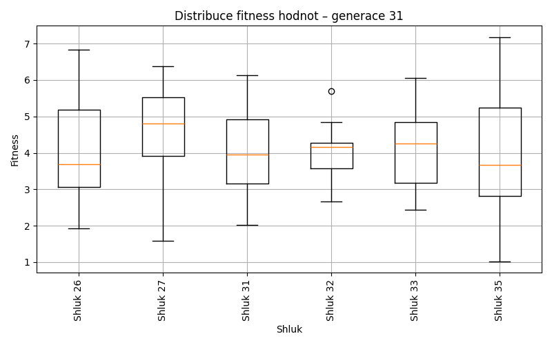
Generace 32
Stabilita mezi generací 31 → 32:
Shluk 27 → 27: 5 jedinců (31.2 %)
Shluk 27 → 33: 4 jedinců (25.0 %)
Shluk 27 → 35: 2 jedinců (12.5 %)
Shluk 27 → 26: 1 jedinců (6.2 %)
Shluk 27 → 32: 4 jedinců (25.0 %)
Shluk 26 → 35: 2 jedinců (9.5 %)
Shluk 26 → 27: 5 jedinců (23.8 %)
Shluk 26 → 33: 7 jedinců (33.3 %)
Shluk 26 → 26: 6 jedinců (28.6 %)
Shluk 26 → 32: 1 jedinců (4.8 %)
Shluk 33 → 33: 9 jedinců (56.2 %)
Shluk 33 → 26: 5 jedinců (31.2 %)
Shluk 33 → 32: 1 jedinců (6.2 %)
Shluk 33 → 31: 1 jedinců (6.2 %)
Shluk 35 → 35: 12 jedinců (66.7 %)
Shluk 35 → 32: 1 jedinců (5.6 %)
Shluk 35 → 31: 2 jedinců (11.1 %)
Shluk 35 → 33: 3 jedinců (16.7 %)
Shluk 31 → 26: 3 jedinců (18.8 %)
Shluk 31 → 31: 10 jedinců (62.5 %)
Shluk 31 → 33: 1 jedinců (6.2 %)
Shluk 31 → 35: 1 jedinců (6.2 %)
Shluk 31 → 32: 1 jedinců (6.2 %)
Shluk 32 → 35: 2 jedinců (15.4 %)
Shluk 32 → 32: 5 jedinců (38.5 %)
Shluk 32 → 33: 3 jedinců (23.1 %)
Shluk 32 → 26: 2 jedinců (15.4 %)
Shluk 32 → 27: 1 jedinců (7.7 %)
Jaccardovo mapování a overlap: Generace 31 → 32
- Cluster 27 → 27 (Jaccard: 0.23, Overlap: 0.45)
- Cluster 26 → 26 (Jaccard: 0.19, Overlap: 0.35)
- Cluster 33 → 33 (Jaccard: 0.26, Overlap: 0.56)
- Cluster 35 → 35 (Jaccard: 0.48, Overlap: 0.67)
- Cluster 31 → 31 (Jaccard: 0.53, Overlap: 0.77)
- Cluster 32 → 32 (Jaccard: 0.24, Overlap: 0.38)
Posun centroidů mezi generací 31 → 32:
- Shluk 0: 1.0749
- Shluk 1: 1.3307
- Shluk 2: 0.5564
- Shluk 3: 1.0067
- Shluk 4: 0.9478
- Shluk 5: 0.6128
Generace 33
Stabilita mezi generací 32 → 33:
Shluk 27 → 27: 9 jedinců (81.8 %)
Shluk 27 → 26: 2 jedinců (18.2 %)
Shluk 35 → 35: 13 jedinců (68.4 %)
Shluk 35 → 27: 1 jedinců (5.3 %)
Shluk 35 → 31: 2 jedinců (10.5 %)
Shluk 35 → 26: 1 jedinců (5.3 %)
Shluk 35 → 32: 2 jedinců (10.5 %)
Shluk 33 → 32: 5 jedinců (18.5 %)
Shluk 33 → 33: 18 jedinců (66.7 %)
Shluk 33 → 26: 3 jedinců (11.1 %)
Shluk 33 → 27: 1 jedinců (3.7 %)
Shluk 26 → 32: 5 jedinců (29.4 %)
Shluk 26 → 31: 5 jedinců (29.4 %)
Shluk 26 → 26: 7 jedinců (41.2 %)
Shluk 31 → 31: 10 jedinců (76.9 %)
Shluk 31 → 33: 1 jedinců (7.7 %)
Shluk 31 → 35: 1 jedinců (7.7 %)
Shluk 31 → 32: 1 jedinců (7.7 %)
Shluk 32 → 32: 6 jedinců (46.2 %)
Shluk 32 → 26: 2 jedinců (15.4 %)
Shluk 32 → 35: 1 jedinců (7.7 %)
Shluk 32 → 33: 4 jedinců (30.8 %)
Jaccardovo mapování a overlap: Generace 32 → 33
- Cluster 27 → 27 (Jaccard: 0.69, Overlap: 0.82)
- Cluster 35 → 35 (Jaccard: 0.62, Overlap: 0.87)
- Cluster 33 → 33 (Jaccard: 0.56, Overlap: 0.78)
- Cluster 26 → 26 (Jaccard: 0.28, Overlap: 0.47)
- Cluster 31 → 31 (Jaccard: 0.50, Overlap: 0.77)
- Cluster 32 → 32 (Jaccard: 0.23, Overlap: 0.46)
Posun centroidů mezi generací 32 → 33:
- Shluk 0: 0.8976
- Shluk 1: 0.3030
- Shluk 2: 0.7765
- Shluk 3: 1.0538
- Shluk 4: 0.4728
- Shluk 5: 0.4105
Generace 34
Stabilita mezi generací 33 → 34:
Shluk 27 → 27: 8 jedinců (72.7 %)
Shluk 27 → 35: 1 jedinců (9.1 %)
Shluk 27 → 26: 1 jedinců (9.1 %)
Shluk 27 → 33: 1 jedinců (9.1 %)
Shluk 35 → 35: 8 jedinců (53.3 %)
Shluk 35 → 33: 2 jedinců (13.3 %)
Shluk 35 → 36: 4 jedinců (26.7 %)
Shluk 35 → 27: 1 jedinců (6.7 %)
Shluk 32 → 27: 10 jedinců (52.6 %)
Shluk 32 → 36: 7 jedinců (36.8 %)
Shluk 32 → 26: 2 jedinců (10.5 %)
Shluk 33 → 33: 15 jedinců (65.2 %)
Shluk 33 → 31: 4 jedinců (17.4 %)
Shluk 33 → 27: 1 jedinců (4.3 %)
Shluk 33 → 36: 1 jedinců (4.3 %)
Shluk 33 → 35: 2 jedinců (8.7 %)
Shluk 31 → 31: 6 jedinců (35.3 %)
Shluk 31 → 26: 3 jedinců (17.6 %)
Shluk 31 → 36: 6 jedinců (35.3 %)
Shluk 31 → 35: 1 jedinců (5.9 %)
Shluk 31 → 33: 1 jedinců (5.9 %)
Shluk 26 → 26: 13 jedinců (86.7 %)
Shluk 26 → 36: 1 jedinců (6.7 %)
Shluk 26 → 27: 1 jedinců (6.7 %)
Jaccardovo mapování a overlap: Generace 33 → 34
- Cluster 27 → 27 (Jaccard: 0.33, Overlap: 0.73)
- Cluster 35 → 35 (Jaccard: 0.42, Overlap: 0.67)
- Cluster 32 → 27 (Jaccard: 0.33, Overlap: 0.53)
- Cluster 33 → 33 (Jaccard: 0.56, Overlap: 0.79)
- Cluster 31 → 31 (Jaccard: 0.29, Overlap: 0.60)
- Cluster 26 → 26 (Jaccard: 0.62, Overlap: 0.87)
Posun centroidů mezi generací 33 → 34:
- Shluk 0: 0.4071
- Shluk 1: 1.1645
- Shluk 2: 1.1855
- Shluk 3: 1.3923
- Shluk 4: 1.5939
- Shluk 5: 1.2903
Generace 35
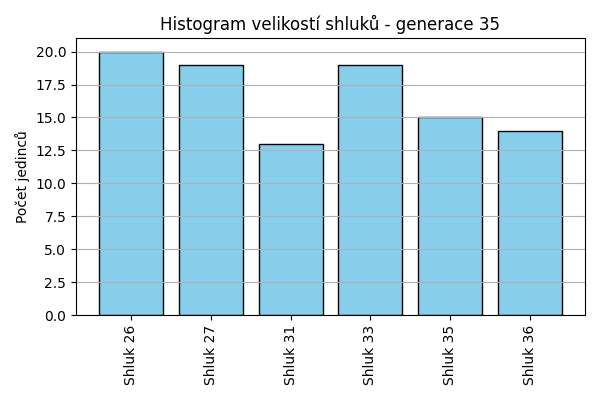
Stabilita mezi generací 34 → 35:
Shluk 27 → 27: 12 jedinců (57.1 %)
Shluk 27 → 33: 3 jedinců (14.3 %)
Shluk 27 → 36: 2 jedinců (9.5 %)
Shluk 27 → 26: 3 jedinců (14.3 %)
Shluk 27 → 31: 1 jedinců (4.8 %)
Shluk 35 → 26: 2 jedinců (16.7 %)
Shluk 35 → 35: 6 jedinců (50.0 %)
Shluk 35 → 36: 1 jedinců (8.3 %)
Shluk 35 → 31: 2 jedinců (16.7 %)
Shluk 35 → 33: 1 jedinců (8.3 %)
Shluk 33 → 33: 10 jedinců (52.6 %)
Shluk 33 → 35: 6 jedinců (31.6 %)
Shluk 33 → 31: 1 jedinců (5.3 %)
Shluk 33 → 27: 2 jedinců (10.5 %)
Shluk 36 → 33: 4 jedinců (21.1 %)
Shluk 36 → 26: 4 jedinců (21.1 %)
Shluk 36 → 36: 9 jedinců (47.4 %)
Shluk 36 → 27: 1 jedinců (5.3 %)
Shluk 36 → 35: 1 jedinců (5.3 %)
Shluk 31 → 31: 7 jedinců (70.0 %)
Shluk 31 → 26: 2 jedinců (20.0 %)
Shluk 31 → 33: 1 jedinců (10.0 %)
Shluk 26 → 26: 9 jedinců (47.4 %)
Shluk 26 → 27: 4 jedinců (21.1 %)
Shluk 26 → 36: 2 jedinců (10.5 %)
Shluk 26 → 31: 2 jedinců (10.5 %)
Shluk 26 → 35: 2 jedinců (10.5 %)
Jaccardovo mapování a overlap: Generace 34 → 35
- Cluster 27 → 27 (Jaccard: 0.43, Overlap: 0.63)
- Cluster 35 → 35 (Jaccard: 0.29, Overlap: 0.50)
- Cluster 33 → 33 (Jaccard: 0.36, Overlap: 0.53)
- Cluster 36 → 36 (Jaccard: 0.38, Overlap: 0.64)
- Cluster 31 → 31 (Jaccard: 0.44, Overlap: 0.70)
- Cluster 26 → 26 (Jaccard: 0.30, Overlap: 0.47)
Posun centroidů mezi generací 34 → 35:
- Shluk 0: 0.7713
- Shluk 1: 0.6740
- Shluk 2: 0.3827
- Shluk 3: 0.6958
- Shluk 4: 0.8370
- Shluk 5: 0.6581
Generace 36
Stabilita mezi generací 35 → 36:
Shluk 27 → 27: 9 jedinců (47.4 %)
Shluk 27 → 37: 7 jedinců (36.8 %)
Shluk 27 → 36: 2 jedinců (10.5 %)
Shluk 27 → 33: 1 jedinců (5.3 %)
Shluk 26 → 26: 9 jedinců (45.0 %)
Shluk 26 → 35: 3 jedinců (15.0 %)
Shluk 26 → 33: 3 jedinců (15.0 %)
Shluk 26 → 27: 1 jedinců (5.0 %)
Shluk 26 → 36: 3 jedinců (15.0 %)
Shluk 26 → 37: 1 jedinců (5.0 %)
Shluk 35 → 26: 1 jedinců (6.7 %)
Shluk 35 → 35: 8 jedinců (53.3 %)
Shluk 35 → 36: 3 jedinců (20.0 %)
Shluk 35 → 37: 2 jedinců (13.3 %)
Shluk 35 → 33: 1 jedinců (6.7 %)
Shluk 33 → 37: 4 jedinců (21.1 %)
Shluk 33 → 36: 7 jedinců (36.8 %)
Shluk 33 → 33: 6 jedinců (31.6 %)
Shluk 33 → 27: 1 jedinců (5.3 %)
Shluk 33 → 35: 1 jedinců (5.3 %)
Shluk 36 → 35: 1 jedinců (7.1 %)
Shluk 36 → 36: 9 jedinců (64.3 %)
Shluk 36 → 33: 3 jedinců (21.4 %)
Shluk 36 → 37: 1 jedinců (7.1 %)
Shluk 31 → 35: 4 jedinců (30.8 %)
Shluk 31 → 33: 2 jedinců (15.4 %)
Shluk 31 → 27: 5 jedinců (38.5 %)
Shluk 31 → 26: 2 jedinců (15.4 %)
Jaccardovo mapování a overlap: Generace 35 → 36
- Cluster 27 → 27 (Jaccard: 0.35, Overlap: 0.56)
- Cluster 26 → 26 (Jaccard: 0.39, Overlap: 0.75)
- Cluster 35 → 35 (Jaccard: 0.33, Overlap: 0.53)
- Cluster 33 → 33 (Jaccard: 0.21, Overlap: 0.38)
- Cluster 36 → 36 (Jaccard: 0.31, Overlap: 0.64)
- Cluster 31 → 27 (Jaccard: 0.21, Overlap: 0.38)
Posun centroidů mezi generací 35 → 36:
- Shluk 0: 0.7225
- Shluk 1: 0.6925
- Shluk 2: 1.3588
- Shluk 3: 1.3627
- Shluk 4: 1.1222
- Shluk 5: 1.8595
Generace 37
Stabilita mezi generací 36 → 37:
Shluk 27 → 33: 3 jedinců (18.8 %)
Shluk 27 → 27: 12 jedinců (75.0 %)
Shluk 27 → 38: 1 jedinců (6.2 %)
Shluk 26 → 27: 4 jedinců (33.3 %)
Shluk 26 → 37: 4 jedinců (33.3 %)
Shluk 26 → 35: 4 jedinců (33.3 %)
Shluk 37 → 38: 5 jedinců (33.3 %)
Shluk 37 → 37: 7 jedinců (46.7 %)
Shluk 37 → 33: 2 jedinců (13.3 %)
Shluk 37 → 39: 1 jedinců (6.7 %)
Shluk 35 → 35: 7 jedinců (41.2 %)
Shluk 35 → 37: 2 jedinců (11.8 %)
Shluk 35 → 27: 1 jedinců (5.9 %)
Shluk 35 → 38: 6 jedinců (35.3 %)
Shluk 35 → 39: 1 jedinců (5.9 %)
Shluk 36 → 27: 8 jedinců (33.3 %)
Shluk 36 → 38: 5 jedinců (20.8 %)
Shluk 36 → 39: 5 jedinců (20.8 %)
Shluk 36 → 35: 4 jedinců (16.7 %)
Shluk 36 → 33: 1 jedinců (4.2 %)
Shluk 36 → 37: 1 jedinců (4.2 %)
Shluk 33 → 27: 2 jedinců (12.5 %)
Shluk 33 → 39: 4 jedinců (25.0 %)
Shluk 33 → 37: 3 jedinců (18.8 %)
Shluk 33 → 33: 4 jedinců (25.0 %)
Shluk 33 → 35: 3 jedinců (18.8 %)
Jaccardovo mapování a overlap: Generace 36 → 37
- Cluster 27 → 27 (Jaccard: 0.39, Overlap: 0.75)
- Cluster 26 → 37 (Jaccard: 0.16, Overlap: 0.33)
- Cluster 37 → 37 (Jaccard: 0.28, Overlap: 0.47)
- Cluster 35 → 35 (Jaccard: 0.25, Overlap: 0.41)
- Cluster 36 → 27 (Jaccard: 0.19, Overlap: 0.33)
- Cluster 33 → 33 (Jaccard: 0.18, Overlap: 0.40)
Posun centroidů mezi generací 36 → 37:
- Shluk 0: 0.9912
- Shluk 1: 1.2847
- Shluk 2: 1.3806
- Shluk 3: 1.1183
- Shluk 4: 1.1505
- Shluk 5: 1.5232
Generace 38
Stabilita mezi generací 37 → 38:
Shluk 33 → 35: 2 jedinců (20.0 %)
Shluk 33 → 41: 3 jedinců (30.0 %)
Shluk 33 → 37: 1 jedinců (10.0 %)
Shluk 33 → 39: 4 jedinců (40.0 %)
Shluk 27 → 40: 6 jedinců (22.2 %)
Shluk 27 → 35: 7 jedinců (25.9 %)
Shluk 27 → 39: 2 jedinců (7.4 %)
Shluk 27 → 37: 11 jedinců (40.7 %)
Shluk 27 → 41: 1 jedinců (3.7 %)
Shluk 37 → 37: 9 jedinců (52.9 %)
Shluk 37 → 41: 5 jedinců (29.4 %)
Shluk 37 → 38: 3 jedinců (17.6 %)
Shluk 38 → 41: 5 jedinců (29.4 %)
Shluk 38 → 40: 1 jedinců (5.9 %)
Shluk 38 → 38: 8 jedinců (47.1 %)
Shluk 38 → 39: 1 jedinců (5.9 %)
Shluk 38 → 37: 1 jedinců (5.9 %)
Shluk 38 → 35: 1 jedinců (5.9 %)
Shluk 35 → 38: 3 jedinců (16.7 %)
Shluk 35 → 41: 6 jedinců (33.3 %)
Shluk 35 → 35: 8 jedinců (44.4 %)
Shluk 35 → 40: 1 jedinců (5.6 %)
Shluk 39 → 39: 8 jedinců (72.7 %)
Shluk 39 → 40: 1 jedinců (9.1 %)
Shluk 39 → 37: 1 jedinců (9.1 %)
Shluk 39 → 41: 1 jedinců (9.1 %)
Jaccardovo mapování a overlap: Generace 37 → 38
- Cluster 33 → 39 (Jaccard: 0.19, Overlap: 0.40)
- Cluster 27 → 37 (Jaccard: 0.28, Overlap: 0.48)
- Cluster 37 → 37 (Jaccard: 0.29, Overlap: 0.53)
- Cluster 38 → 38 (Jaccard: 0.35, Overlap: 0.57)
- Cluster 35 → 35 (Jaccard: 0.29, Overlap: 0.44)
- Cluster 39 → 39 (Jaccard: 0.44, Overlap: 0.73)
Posun centroidů mezi generací 37 → 38:
- Shluk 0: 0.8599
- Shluk 1: 1.1410
- Shluk 2: 0.9602
- Shluk 3: 1.4672
- Shluk 4: 1.8536
- Shluk 5: 1.4105
Generace 39
Stabilita mezi generací 38 → 39:
Shluk 35 → 35: 9 jedinců (50.0 %)
Shluk 35 → 41: 1 jedinců (5.6 %)
Shluk 35 → 42: 4 jedinců (22.2 %)
Shluk 35 → 37: 3 jedinců (16.7 %)
Shluk 35 → 38: 1 jedinců (5.6 %)
Shluk 40 → 37: 7 jedinců (77.8 %)
Shluk 40 → 35: 1 jedinců (11.1 %)
Shluk 40 → 39: 1 jedinců (11.1 %)
Shluk 41 → 39: 2 jedinců (9.5 %)
Shluk 41 → 38: 5 jedinců (23.8 %)
Shluk 41 → 37: 1 jedinců (4.8 %)
Shluk 41 → 35: 3 jedinců (14.3 %)
Shluk 41 → 41: 6 jedinců (28.6 %)
Shluk 41 → 42: 4 jedinců (19.0 %)
Shluk 37 → 42: 5 jedinců (21.7 %)
Shluk 37 → 41: 2 jedinců (8.7 %)
Shluk 37 → 37: 13 jedinců (56.5 %)
Shluk 37 → 38: 2 jedinců (8.7 %)
Shluk 37 → 35: 1 jedinců (4.3 %)
Shluk 38 → 42: 3 jedinců (21.4 %)
Shluk 38 → 38: 8 jedinců (57.1 %)
Shluk 38 → 41: 2 jedinců (14.3 %)
Shluk 38 → 37: 1 jedinců (7.1 %)
Shluk 39 → 39: 5 jedinců (33.3 %)
Shluk 39 → 35: 3 jedinců (20.0 %)
Shluk 39 → 38: 2 jedinců (13.3 %)
Shluk 39 → 42: 4 jedinců (26.7 %)
Shluk 39 → 37: 1 jedinců (6.7 %)
Jaccardovo mapování a overlap: Generace 38 → 39
- Cluster 35 → 35 (Jaccard: 0.35, Overlap: 0.53)
- Cluster 40 → 37 (Jaccard: 0.25, Overlap: 0.78)
- Cluster 41 → 41 (Jaccard: 0.23, Overlap: 0.55)
- Cluster 37 → 37 (Jaccard: 0.36, Overlap: 0.57)
- Cluster 38 → 38 (Jaccard: 0.33, Overlap: 0.57)
- Cluster 39 → 39 (Jaccard: 0.28, Overlap: 0.62)
Posun centroidů mezi generací 38 → 39:
- Shluk 0: 0.4978
- Shluk 1: 0.4487
- Shluk 2: 0.4844
- Shluk 3: 0.8324
- Shluk 4: 1.3014
- Shluk 5: 1.1569
Generace 40
Stabilita mezi generací 39 → 40:
Shluk 35 → 42: 6 jedinců (35.3 %)
Shluk 35 → 41: 6 jedinců (35.3 %)
Shluk 35 → 43: 3 jedinců (17.6 %)
Shluk 35 → 39: 1 jedinců (5.9 %)
Shluk 35 → 38: 1 jedinců (5.9 %)
Shluk 37 → 39: 2 jedinců (7.7 %)
Shluk 37 → 37: 13 jedinců (50.0 %)
Shluk 37 → 42: 5 jedinců (19.2 %)
Shluk 37 → 38: 1 jedinců (3.8 %)
Shluk 37 → 43: 2 jedinců (7.7 %)
Shluk 37 → 41: 3 jedinců (11.5 %)
Shluk 39 → 39: 4 jedinců (50.0 %)
Shluk 39 → 41: 1 jedinců (12.5 %)
Shluk 39 → 37: 2 jedinců (25.0 %)
Shluk 39 → 42: 1 jedinců (12.5 %)
Shluk 42 → 37: 5 jedinců (25.0 %)
Shluk 42 → 42: 8 jedinců (40.0 %)
Shluk 42 → 43: 3 jedinců (15.0 %)
Shluk 42 → 38: 2 jedinců (10.0 %)
Shluk 42 → 39: 2 jedinců (10.0 %)
Shluk 38 → 39: 4 jedinců (22.2 %)
Shluk 38 → 38: 11 jedinců (61.1 %)
Shluk 38 → 43: 1 jedinců (5.6 %)
Shluk 38 → 41: 1 jedinců (5.6 %)
Shluk 38 → 37: 1 jedinců (5.6 %)
Shluk 41 → 41: 8 jedinců (72.7 %)
Shluk 41 → 43: 1 jedinců (9.1 %)
Shluk 41 → 37: 1 jedinců (9.1 %)
Shluk 41 → 39: 1 jedinců (9.1 %)
Jaccardovo mapování a overlap: Generace 39 → 40
- Cluster 35 → 41 (Jaccard: 0.20, Overlap: 0.35)
- Cluster 37 → 37 (Jaccard: 0.37, Overlap: 0.59)
- Cluster 39 → 39 (Jaccard: 0.22, Overlap: 0.50)
- Cluster 42 → 42 (Jaccard: 0.25, Overlap: 0.40)
- Cluster 38 → 38 (Jaccard: 0.50, Overlap: 0.73)
- Cluster 41 → 41 (Jaccard: 0.36, Overlap: 0.73)
Posun centroidů mezi generací 39 → 40:
- Shluk 0: 1.1550
- Shluk 1: 1.5647
- Shluk 2: 0.8934
- Shluk 3: 1.2650
- Shluk 4: 1.2941
- Shluk 5: 1.5142
Generace 41
Stabilita mezi generací 40 → 41:
Shluk 42 → 44: 4 jedinců (20.0 %)
Shluk 42 → 42: 7 jedinců (35.0 %)
Shluk 42 → 39: 5 jedinců (25.0 %)
Shluk 42 → 38: 2 jedinců (10.0 %)
Shluk 42 → 37: 1 jedinců (5.0 %)
Shluk 42 → 41: 1 jedinců (5.0 %)
Shluk 39 → 38: 3 jedinců (21.4 %)
Shluk 39 → 39: 7 jedinců (50.0 %)
Shluk 39 → 44: 2 jedinců (14.3 %)
Shluk 39 → 37: 1 jedinců (7.1 %)
Shluk 39 → 41: 1 jedinců (7.1 %)
Shluk 37 → 42: 5 jedinců (22.7 %)
Shluk 37 → 37: 13 jedinců (59.1 %)
Shluk 37 → 39: 2 jedinců (9.1 %)
Shluk 37 → 41: 2 jedinců (9.1 %)
Shluk 41 → 41: 7 jedinců (36.8 %)
Shluk 41 → 44: 3 jedinců (15.8 %)
Shluk 41 → 38: 7 jedinců (36.8 %)
Shluk 41 → 37: 2 jedinců (10.5 %)
Shluk 43 → 37: 4 jedinců (40.0 %)
Shluk 43 → 38: 1 jedinců (10.0 %)
Shluk 43 → 42: 1 jedinců (10.0 %)
Shluk 43 → 39: 1 jedinců (10.0 %)
Shluk 43 → 41: 1 jedinců (10.0 %)
Shluk 43 → 44: 2 jedinců (20.0 %)
Shluk 38 → 38: 11 jedinců (73.3 %)
Shluk 38 → 44: 3 jedinců (20.0 %)
Shluk 38 → 39: 1 jedinců (6.7 %)
Jaccardovo mapování a overlap: Generace 40 → 41
- Cluster 42 → 42 (Jaccard: 0.27, Overlap: 0.54)
- Cluster 39 → 39 (Jaccard: 0.30, Overlap: 0.50)
- Cluster 37 → 37 (Jaccard: 0.43, Overlap: 0.62)
- Cluster 41 → 41 (Jaccard: 0.29, Overlap: 0.58)
- Cluster 43 → 37 (Jaccard: 0.15, Overlap: 0.40)
- Cluster 38 → 38 (Jaccard: 0.39, Overlap: 0.73)
Posun centroidů mezi generací 40 → 41:
- Shluk 0: 0.3548
- Shluk 1: 0.5015
- Shluk 2: 0.6009
- Shluk 3: 0.6763
- Shluk 4: 0.6729
- Shluk 5: 1.0082
Generace 42
Stabilita mezi generací 41 → 42:
Shluk 44 → 41: 3 jedinců (21.4 %)
Shluk 44 → 44: 8 jedinců (57.1 %)
Shluk 44 → 37: 1 jedinců (7.1 %)
Shluk 44 → 42: 1 jedinců (7.1 %)
Shluk 44 → 45: 1 jedinců (7.1 %)
Shluk 38 → 44: 6 jedinců (25.0 %)
Shluk 38 → 41: 6 jedinců (25.0 %)
Shluk 38 → 42: 4 jedinců (16.7 %)
Shluk 38 → 45: 3 jedinců (12.5 %)
Shluk 38 → 37: 2 jedinců (8.3 %)
Shluk 38 → 39: 3 jedinců (12.5 %)
Shluk 39 → 39: 8 jedinců (50.0 %)
Shluk 39 → 44: 5 jedinců (31.2 %)
Shluk 39 → 41: 2 jedinců (12.5 %)
Shluk 39 → 42: 1 jedinců (6.2 %)
Shluk 42 → 42: 6 jedinců (46.2 %)
Shluk 42 → 44: 1 jedinců (7.7 %)
Shluk 42 → 37: 2 jedinců (15.4 %)
Shluk 42 → 45: 3 jedinců (23.1 %)
Shluk 42 → 39: 1 jedinců (7.7 %)
Shluk 41 → 41: 5 jedinců (41.7 %)
Shluk 41 → 45: 2 jedinců (16.7 %)
Shluk 41 → 44: 1 jedinců (8.3 %)
Shluk 41 → 39: 3 jedinců (25.0 %)
Shluk 41 → 42: 1 jedinců (8.3 %)
Shluk 37 → 45: 8 jedinců (38.1 %)
Shluk 37 → 37: 9 jedinců (42.9 %)
Shluk 37 → 42: 2 jedinců (9.5 %)
Shluk 37 → 44: 1 jedinců (4.8 %)
Shluk 37 → 41: 1 jedinců (4.8 %)
Jaccardovo mapování a overlap: Generace 41 → 42
- Cluster 44 → 44 (Jaccard: 0.29, Overlap: 0.57)
- Cluster 38 → 41 (Jaccard: 0.17, Overlap: 0.35)
- Cluster 39 → 39 (Jaccard: 0.35, Overlap: 0.53)
- Cluster 42 → 42 (Jaccard: 0.27, Overlap: 0.46)
- Cluster 41 → 41 (Jaccard: 0.21, Overlap: 0.42)
- Cluster 37 → 37 (Jaccard: 0.35, Overlap: 0.64)
Posun centroidů mezi generací 41 → 42:
- Shluk 0: 0.4814
- Shluk 1: 1.0865
- Shluk 2: 1.0095
- Shluk 3: 1.1496
- Shluk 4: 1.0246
- Shluk 5: 1.0357

Generace 43
Stabilita mezi generací 42 → 43:
Shluk 41 → 41: 8 jedinců (47.1 %)
Shluk 41 → 47: 2 jedinců (11.8 %)
Shluk 41 → 46: 4 jedinců (23.5 %)
Shluk 41 → 39: 2 jedinců (11.8 %)
Shluk 41 → 37: 1 jedinců (5.9 %)
Shluk 44 → 39: 10 jedinců (45.5 %)
Shluk 44 → 37: 3 jedinců (13.6 %)
Shluk 44 → 41: 2 jedinců (9.1 %)
Shluk 44 → 47: 6 jedinců (27.3 %)
Shluk 44 → 46: 1 jedinců (4.5 %)
Shluk 39 → 39: 9 jedinců (60.0 %)
Shluk 39 → 42: 4 jedinců (26.7 %)
Shluk 39 → 46: 1 jedinců (6.7 %)
Shluk 39 → 47: 1 jedinců (6.7 %)
Shluk 42 → 46: 2 jedinců (13.3 %)
Shluk 42 → 39: 4 jedinců (26.7 %)
Shluk 42 → 47: 2 jedinců (13.3 %)
Shluk 42 → 42: 5 jedinců (33.3 %)
Shluk 42 → 41: 2 jedinců (13.3 %)
Shluk 45 → 37: 6 jedinců (35.3 %)
Shluk 45 → 41: 4 jedinců (23.5 %)
Shluk 45 → 46: 1 jedinců (5.9 %)
Shluk 45 → 47: 4 jedinců (23.5 %)
Shluk 45 → 42: 1 jedinců (5.9 %)
Shluk 45 → 39: 1 jedinců (5.9 %)
Shluk 37 → 37: 9 jedinců (64.3 %)
Shluk 37 → 41: 2 jedinců (14.3 %)
Shluk 37 → 46: 2 jedinců (14.3 %)
Shluk 37 → 47: 1 jedinců (7.1 %)
Jaccardovo mapování a overlap: Generace 42 → 43
- Cluster 41 → 41 (Jaccard: 0.30, Overlap: 0.47)
- Cluster 44 → 39 (Jaccard: 0.26, Overlap: 0.45)
- Cluster 39 → 39 (Jaccard: 0.28, Overlap: 0.60)
- Cluster 42 → 42 (Jaccard: 0.25, Overlap: 0.50)
- Cluster 45 → 37 (Jaccard: 0.20, Overlap: 0.35)
- Cluster 37 → 37 (Jaccard: 0.38, Overlap: 0.64)
Posun centroidů mezi generací 42 → 43:
- Shluk 0: 0.4051
- Shluk 1: 0.5502
- Shluk 2: 0.4503
- Shluk 3: 0.7307
- Shluk 4: 1.0309
- Shluk 5: 0.8829
Generace 44
Stabilita mezi generací 43 → 44:
Shluk 41 → 42: 3 jedinců (16.7 %)
Shluk 41 → 41: 12 jedinců (66.7 %)
Shluk 41 → 48: 2 jedinců (11.1 %)
Shluk 41 → 37: 1 jedinců (5.6 %)
Shluk 39 → 39: 18 jedinců (69.2 %)
Shluk 39 → 41: 1 jedinců (3.8 %)
Shluk 39 → 47: 2 jedinců (7.7 %)
Shluk 39 → 42: 1 jedinců (3.8 %)
Shluk 39 → 48: 4 jedinců (15.4 %)
Shluk 46 → 37: 7 jedinců (63.6 %)
Shluk 46 → 42: 3 jedinců (27.3 %)
Shluk 46 → 41: 1 jedinců (9.1 %)
Shluk 37 → 41: 3 jedinců (15.8 %)
Shluk 37 → 37: 9 jedinců (47.4 %)
Shluk 37 → 48: 5 jedinců (26.3 %)
Shluk 37 → 47: 1 jedinců (5.3 %)
Shluk 37 → 42: 1 jedinců (5.3 %)
Shluk 47 → 47: 11 jedinců (68.8 %)
Shluk 47 → 41: 1 jedinců (6.2 %)
Shluk 47 → 37: 2 jedinců (12.5 %)
Shluk 47 → 48: 1 jedinců (6.2 %)
Shluk 47 → 42: 1 jedinců (6.2 %)
Shluk 42 → 39: 2 jedinců (20.0 %)
Shluk 42 → 42: 5 jedinců (50.0 %)
Shluk 42 → 37: 1 jedinců (10.0 %)
Shluk 42 → 41: 1 jedinců (10.0 %)
Shluk 42 → 48: 1 jedinců (10.0 %)
Jaccardovo mapování a overlap: Generace 43 → 44
- Cluster 41 → 41 (Jaccard: 0.48, Overlap: 0.67)
- Cluster 39 → 39 (Jaccard: 0.64, Overlap: 0.90)
- Cluster 46 → 37 (Jaccard: 0.29, Overlap: 0.64)
- Cluster 37 → 37 (Jaccard: 0.30, Overlap: 0.47)
- Cluster 47 → 47 (Jaccard: 0.58, Overlap: 0.79)
- Cluster 42 → 42 (Jaccard: 0.26, Overlap: 0.50)
Posun centroidů mezi generací 43 → 44:
- Shluk 0: 0.4522
- Shluk 1: 0.1745
- Shluk 2: 0.4062
- Shluk 3: 0.5439
- Shluk 4: 1.0930
- Shluk 5: 0.8997
Generace 45
Stabilita mezi generací 44 → 45:
Shluk 42 → 42: 10 jedinců (71.4 %)
Shluk 42 → 37: 1 jedinců (7.1 %)
Shluk 42 → 49: 3 jedinců (21.4 %)
Shluk 39 → 49: 6 jedinců (30.0 %)
Shluk 39 → 39: 10 jedinců (50.0 %)
Shluk 39 → 47: 1 jedinců (5.0 %)
Shluk 39 → 37: 3 jedinců (15.0 %)
Shluk 37 → 37: 8 jedinců (40.0 %)
Shluk 37 → 47: 7 jedinců (35.0 %)
Shluk 37 → 41: 2 jedinců (10.0 %)
Shluk 37 → 39: 2 jedinců (10.0 %)
Shluk 37 → 49: 1 jedinců (5.0 %)
Shluk 41 → 41: 10 jedinců (52.6 %)
Shluk 41 → 42: 3 jedinců (15.8 %)
Shluk 41 → 47: 3 jedinců (15.8 %)
Shluk 41 → 37: 1 jedinců (5.3 %)
Shluk 41 → 39: 2 jedinců (10.5 %)
Shluk 47 → 47: 8 jedinců (57.1 %)
Shluk 47 → 49: 4 jedinců (28.6 %)
Shluk 47 → 37: 1 jedinců (7.1 %)
Shluk 47 → 39: 1 jedinců (7.1 %)
Shluk 48 → 37: 4 jedinců (30.8 %)
Shluk 48 → 39: 3 jedinců (23.1 %)
Shluk 48 → 47: 1 jedinců (7.7 %)
Shluk 48 → 41: 3 jedinců (23.1 %)
Shluk 48 → 42: 1 jedinců (7.7 %)
Shluk 48 → 49: 1 jedinců (7.7 %)
Jaccardovo mapování a overlap: Generace 44 → 45
- Cluster 42 → 42 (Jaccard: 0.56, Overlap: 0.71)
- Cluster 39 → 39 (Jaccard: 0.36, Overlap: 0.56)
- Cluster 37 → 37 (Jaccard: 0.27, Overlap: 0.44)
- Cluster 41 → 41 (Jaccard: 0.42, Overlap: 0.67)
- Cluster 47 → 47 (Jaccard: 0.31, Overlap: 0.57)
- Cluster 48 → 37 (Jaccard: 0.15, Overlap: 0.31)
Posun centroidů mezi generací 44 → 45:
- Shluk 0: 0.4982
- Shluk 1: 0.3620
- Shluk 2: 0.3836
- Shluk 3: 0.2554
- Shluk 4: 0.4194
- Shluk 5: 0.8318
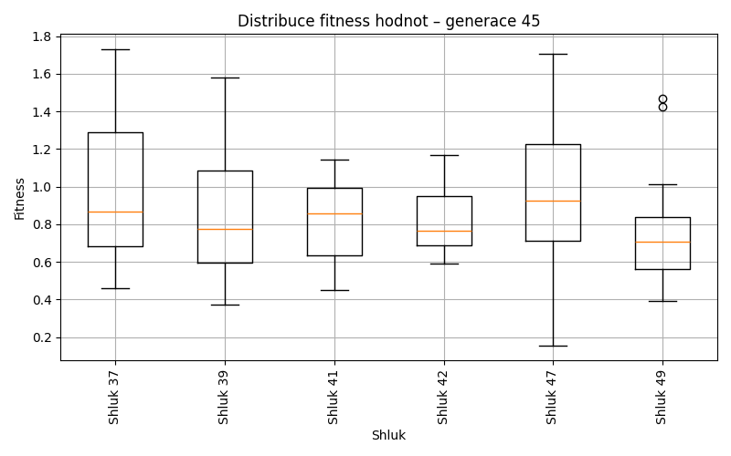
Generace 46
Stabilita mezi generací 45 → 46:
Shluk 42 → 37: 2 jedinců (14.3 %)
Shluk 42 → 50: 2 jedinců (14.3 %)
Shluk 42 → 42: 10 jedinců (71.4 %)
Shluk 49 → 49: 13 jedinců (86.7 %)
Shluk 49 → 37: 2 jedinců (13.3 %)
Shluk 37 → 42: 3 jedinců (16.7 %)
Shluk 37 → 47: 3 jedinců (16.7 %)
Shluk 37 → 37: 6 jedinců (33.3 %)
Shluk 37 → 39: 2 jedinců (11.1 %)
Shluk 37 → 50: 3 jedinců (16.7 %)
Shluk 37 → 49: 1 jedinců (5.6 %)
Shluk 39 → 39: 11 jedinců (61.1 %)
Shluk 39 → 47: 3 jedinců (16.7 %)
Shluk 39 → 49: 3 jedinců (16.7 %)
Shluk 39 → 50: 1 jedinců (5.6 %)
Shluk 41 → 50: 3 jedinců (20.0 %)
Shluk 41 → 42: 4 jedinců (26.7 %)
Shluk 41 → 37: 3 jedinců (20.0 %)
Shluk 41 → 49: 2 jedinců (13.3 %)
Shluk 41 → 39: 2 jedinců (13.3 %)
Shluk 41 → 47: 1 jedinců (6.7 %)
Shluk 47 → 47: 6 jedinců (30.0 %)
Shluk 47 → 49: 3 jedinců (15.0 %)
Shluk 47 → 37: 5 jedinců (25.0 %)
Shluk 47 → 50: 2 jedinců (10.0 %)
Shluk 47 → 39: 2 jedinců (10.0 %)
Shluk 47 → 42: 2 jedinců (10.0 %)
Jaccardovo mapování a overlap: Generace 45 → 46
- Cluster 42 → 42 (Jaccard: 0.43, Overlap: 0.71)
- Cluster 49 → 49 (Jaccard: 0.54, Overlap: 0.87)
- Cluster 37 → 37 (Jaccard: 0.20, Overlap: 0.33)
- Cluster 39 → 39 (Jaccard: 0.46, Overlap: 0.65)
- Cluster 41 → 42 (Jaccard: 0.13, Overlap: 0.27)
- Cluster 47 → 47 (Jaccard: 0.22, Overlap: 0.46)
Posun centroidů mezi generací 45 → 46:
- Shluk 0: 0.5292
- Shluk 1: 0.3401
- Shluk 2: 0.7496
- Shluk 3: 0.8692
- Shluk 4: 0.7983
- Shluk 5: 0.9092
Generace 47

Stabilita mezi generací 46 → 47:
Shluk 37 → 51: 1 jedinců (5.6 %)
Shluk 37 → 50: 7 jedinců (38.9 %)
Shluk 37 → 52: 1 jedinců (5.6 %)
Shluk 37 → 37: 8 jedinců (44.4 %)
Shluk 37 → 49: 1 jedinců (5.6 %)
Shluk 49 → 39: 5 jedinců (22.7 %)
Shluk 49 → 37: 2 jedinců (9.1 %)
Shluk 49 → 49: 9 jedinců (40.9 %)
Shluk 49 → 52: 4 jedinců (18.2 %)
Shluk 49 → 51: 2 jedinců (9.1 %)
Shluk 42 → 49: 2 jedinců (10.5 %)
Shluk 42 → 37: 6 jedinců (31.6 %)
Shluk 42 → 39: 1 jedinců (5.3 %)
Shluk 42 → 50: 5 jedinců (26.3 %)
Shluk 42 → 52: 1 jedinců (5.3 %)
Shluk 42 → 51: 4 jedinců (21.1 %)
Shluk 39 → 52: 7 jedinců (41.2 %)
Shluk 39 → 39: 8 jedinců (47.1 %)
Shluk 39 → 37: 1 jedinců (5.9 %)
Shluk 39 → 49: 1 jedinců (5.9 %)
Shluk 50 → 50: 7 jedinců (63.6 %)
Shluk 50 → 49: 1 jedinců (9.1 %)
Shluk 50 → 37: 1 jedinců (9.1 %)
Shluk 50 → 39: 1 jedinců (9.1 %)
Shluk 50 → 51: 1 jedinců (9.1 %)
Shluk 47 → 50: 7 jedinců (53.8 %)
Shluk 47 → 39: 3 jedinců (23.1 %)
Shluk 47 → 49: 2 jedinců (15.4 %)
Shluk 47 → 52: 1 jedinců (7.7 %)
Jaccardovo mapování a overlap: Generace 46 → 47
- Cluster 37 → 37 (Jaccard: 0.29, Overlap: 0.44)
- Cluster 49 → 49 (Jaccard: 0.31, Overlap: 0.56)
- Cluster 42 → 37 (Jaccard: 0.19, Overlap: 0.33)
- Cluster 39 → 39 (Jaccard: 0.30, Overlap: 0.47)
- Cluster 50 → 50 (Jaccard: 0.23, Overlap: 0.64)
- Cluster 47 → 50 (Jaccard: 0.22, Overlap: 0.54)
Posun centroidů mezi generací 46 → 47:
- Shluk 0: 0.3703
- Shluk 1: 0.4164
- Shluk 2: 0.7753
- Shluk 3: 0.5118
- Shluk 4: 0.7804
- Shluk 5: 0.8084
Generace 48
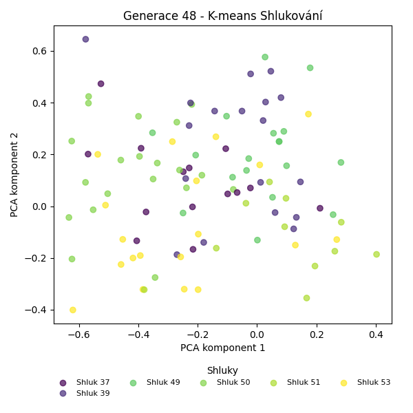
Stabilita mezi generací 47 → 48:
Shluk 51 → 37: 1 jedinců (12.5 %)
Shluk 51 → 53: 4 jedinců (50.0 %)
Shluk 51 → 51: 3 jedinců (37.5 %)
Shluk 39 → 51: 5 jedinců (27.8 %)
Shluk 39 → 39: 10 jedinců (55.6 %)
Shluk 39 → 53: 3 jedinců (16.7 %)
Shluk 49 → 53: 1 jedinců (6.2 %)
Shluk 49 → 49: 13 jedinců (81.2 %)
Shluk 49 → 51: 1 jedinců (6.2 %)
Shluk 49 → 50: 1 jedinců (6.2 %)
Shluk 52 → 37: 1 jedinců (7.1 %)
Shluk 52 → 49: 5 jedinců (35.7 %)
Shluk 52 → 39: 6 jedinců (42.9 %)
Shluk 52 → 51: 1 jedinců (7.1 %)
Shluk 52 → 53: 1 jedinců (7.1 %)
Shluk 50 → 37: 5 jedinců (19.2 %)
Shluk 50 → 50: 12 jedinců (46.2 %)
Shluk 50 → 53: 8 jedinců (30.8 %)
Shluk 50 → 39: 1 jedinců (3.8 %)
Shluk 37 → 37: 7 jedinců (38.9 %)
Shluk 37 → 50: 7 jedinců (38.9 %)
Shluk 37 → 53: 2 jedinců (11.1 %)
Shluk 37 → 39: 1 jedinců (5.6 %)
Shluk 37 → 51: 1 jedinců (5.6 %)
Jaccardovo mapování a overlap: Generace 47 → 48
- Cluster 51 → 51 (Jaccard: 0.19, Overlap: 0.38)
- Cluster 39 → 39 (Jaccard: 0.38, Overlap: 0.56)
- Cluster 49 → 49 (Jaccard: 0.62, Overlap: 0.81)
- Cluster 52 → 39 (Jaccard: 0.23, Overlap: 0.43)
- Cluster 50 → 50 (Jaccard: 0.35, Overlap: 0.60)
- Cluster 37 → 37 (Jaccard: 0.28, Overlap: 0.50)
Posun centroidů mezi generací 47 → 48:
- Shluk 0: 0.2476
- Shluk 1: 0.3318
- Shluk 2: 0.2035
- Shluk 3: 0.3041
- Shluk 4: 0.6235
- Shluk 5: 0.8774
Generace 49
Stabilita mezi generací 48 → 49:
Shluk 37 → 37: 10 jedinců (71.4 %)
Shluk 37 → 54: 2 jedinců (14.3 %)
Shluk 37 → 50: 2 jedinců (14.3 %)
Shluk 51 → 54: 2 jedinců (18.2 %)
Shluk 51 → 51: 5 jedinců (45.5 %)
Shluk 51 → 39: 2 jedinců (18.2 %)
Shluk 51 → 37: 2 jedinců (18.2 %)
Shluk 53 → 49: 3 jedinců (15.8 %)
Shluk 53 → 37: 4 jedinců (21.1 %)
Shluk 53 → 39: 4 jedinců (21.1 %)
Shluk 53 → 50: 6 jedinců (31.6 %)
Shluk 53 → 54: 2 jedinců (10.5 %)
Shluk 39 → 39: 8 jedinců (44.4 %)
Shluk 39 → 54: 5 jedinců (27.8 %)
Shluk 39 → 37: 2 jedinců (11.1 %)
Shluk 39 → 49: 2 jedinců (11.1 %)
Shluk 39 → 50: 1 jedinců (5.6 %)
Shluk 50 → 50: 15 jedinců (75.0 %)
Shluk 50 → 54: 4 jedinců (20.0 %)
Shluk 50 → 37: 1 jedinců (5.0 %)
Shluk 49 → 49: 9 jedinců (50.0 %)
Shluk 49 → 54: 2 jedinců (11.1 %)
Shluk 49 → 51: 4 jedinců (22.2 %)
Shluk 49 → 39: 1 jedinců (5.6 %)
Shluk 49 → 37: 1 jedinců (5.6 %)
Shluk 49 → 50: 1 jedinců (5.6 %)
Jaccardovo mapování a overlap: Generace 48 → 49
- Cluster 37 → 37 (Jaccard: 0.42, Overlap: 0.71)
- Cluster 51 → 51 (Jaccard: 0.33, Overlap: 0.56)
- Cluster 53 → 50 (Jaccard: 0.16, Overlap: 0.32)
- Cluster 39 → 39 (Jaccard: 0.32, Overlap: 0.53)
- Cluster 50 → 50 (Jaccard: 0.50, Overlap: 0.75)
- Cluster 49 → 49 (Jaccard: 0.39, Overlap: 0.64)
Posun centroidů mezi generací 48 → 49:
- Shluk 0: 0.2265
- Shluk 1: 0.3698
- Shluk 2: 0.2959
- Shluk 3: 0.2180
- Shluk 4: 0.4653
- Shluk 5: 0.7581
Generace 50
Stabilita mezi generací 49 → 50:
Shluk 37 → 37: 11 jedinců (55.0 %)
Shluk 37 → 49: 2 jedinců (10.0 %)
Shluk 37 → 56: 4 jedinců (20.0 %)
Shluk 37 → 50: 1 jedinců (5.0 %)
Shluk 37 → 55: 1 jedinců (5.0 %)
Shluk 37 → 39: 1 jedinců (5.0 %)
Shluk 54 → 50: 7 jedinců (41.2 %)
Shluk 54 → 37: 2 jedinců (11.8 %)
Shluk 54 → 49: 2 jedinců (11.8 %)
Shluk 54 → 39: 5 jedinců (29.4 %)
Shluk 54 → 55: 1 jedinců (5.9 %)
Shluk 51 → 49: 4 jedinců (44.4 %)
Shluk 51 → 55: 2 jedinců (22.2 %)
Shluk 51 → 50: 1 jedinců (11.1 %)
Shluk 51 → 37: 1 jedinců (11.1 %)
Shluk 51 → 39: 1 jedinců (11.1 %)
Shluk 49 → 37: 1 jedinců (7.1 %)
Shluk 49 → 39: 2 jedinců (14.3 %)
Shluk 49 → 50: 1 jedinců (7.1 %)
Shluk 49 → 49: 9 jedinců (64.3 %)
Shluk 49 → 56: 1 jedinců (7.1 %)
Shluk 39 → 55: 3 jedinců (20.0 %)
Shluk 39 → 56: 2 jedinců (13.3 %)
Shluk 39 → 39: 8 jedinců (53.3 %)
Shluk 39 → 50: 1 jedinců (6.7 %)
Shluk 39 → 37: 1 jedinců (6.7 %)
Shluk 50 → 50: 10 jedinců (40.0 %)
Shluk 50 → 56: 4 jedinců (16.0 %)
Shluk 50 → 55: 6 jedinců (24.0 %)
Shluk 50 → 37: 5 jedinců (20.0 %)
Jaccardovo mapování a overlap: Generace 49 → 50
- Cluster 37 → 37 (Jaccard: 0.37, Overlap: 0.55)
- Cluster 54 → 50 (Jaccard: 0.23, Overlap: 0.41)
- Cluster 51 → 49 (Jaccard: 0.18, Overlap: 0.44)
- Cluster 49 → 49 (Jaccard: 0.41, Overlap: 0.64)
- Cluster 39 → 39 (Jaccard: 0.33, Overlap: 0.53)
- Cluster 50 → 50 (Jaccard: 0.28, Overlap: 0.48)
Posun centroidů mezi generací 49 → 50:
- Shluk 0: 0.3511
- Shluk 1: 0.3804
- Shluk 2: 0.3379
- Shluk 3: 0.3477
- Shluk 4: 0.8589
- Shluk 5: 0.7512
Generace 51
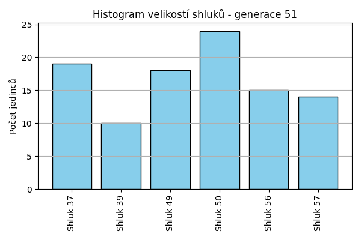
Stabilita mezi generací 50 → 51:
Shluk 37 → 57: 8 jedinců (38.1 %)
Shluk 37 → 37: 10 jedinců (47.6 %)
Shluk 37 → 56: 1 jedinců (4.8 %)
Shluk 37 → 50: 2 jedinců (9.5 %)
Shluk 50 → 50: 14 jedinců (66.7 %)
Shluk 50 → 57: 2 jedinců (9.5 %)
Shluk 50 → 49: 3 jedinců (14.3 %)
Shluk 50 → 37: 1 jedinců (4.8 %)
Shluk 50 → 39: 1 jedinců (4.8 %)
Shluk 49 → 49: 7 jedinců (41.2 %)
Shluk 49 → 37: 1 jedinců (5.9 %)
Shluk 49 → 50: 4 jedinců (23.5 %)
Shluk 49 → 56: 3 jedinců (17.6 %)
Shluk 49 → 39: 2 jedinců (11.8 %)
Shluk 55 → 37: 4 jedinců (30.8 %)
Shluk 55 → 50: 2 jedinců (15.4 %)
Shluk 55 → 57: 3 jedinců (23.1 %)
Shluk 55 → 49: 1 jedinců (7.7 %)
Shluk 55 → 39: 1 jedinců (7.7 %)
Shluk 55 → 56: 2 jedinců (15.4 %)
Shluk 56 → 56: 8 jedinců (72.7 %)
Shluk 56 → 50: 2 jedinců (18.2 %)
Shluk 56 → 37: 1 jedinců (9.1 %)
Shluk 39 → 49: 7 jedinců (41.2 %)
Shluk 39 → 39: 6 jedinců (35.3 %)
Shluk 39 → 56: 1 jedinců (5.9 %)
Shluk 39 → 57: 1 jedinců (5.9 %)
Shluk 39 → 37: 2 jedinců (11.8 %)
Jaccardovo mapování a overlap: Generace 50 → 51
- Cluster 37 → 37 (Jaccard: 0.33, Overlap: 0.53)
- Cluster 50 → 50 (Jaccard: 0.45, Overlap: 0.67)
- Cluster 49 → 49 (Jaccard: 0.25, Overlap: 0.41)
- Cluster 55 → 37 (Jaccard: 0.14, Overlap: 0.31)
- Cluster 56 → 56 (Jaccard: 0.44, Overlap: 0.73)
- Cluster 39 → 39 (Jaccard: 0.29, Overlap: 0.60)
Posun centroidů mezi generací 50 → 51:
- Shluk 0: 0.2793
- Shluk 1: 0.3777
- Shluk 2: 0.4414
- Shluk 3: 0.2032
- Shluk 4: 0.6461
- Shluk 5: 0.8258
Generace 52
Stabilita mezi generací 51 → 52:
Shluk 57 → 58: 1 jedinců (7.1 %)
Shluk 57 → 57: 8 jedinců (57.1 %)
Shluk 57 → 50: 4 jedinců (28.6 %)
Shluk 57 → 49: 1 jedinců (7.1 %)
Shluk 50 → 50: 14 jedinců (58.3 %)
Shluk 50 → 56: 7 jedinců (29.2 %)
Shluk 50 → 49: 2 jedinců (8.3 %)
Shluk 50 → 57: 1 jedinců (4.2 %)
Shluk 49 → 49: 11 jedinců (61.1 %)
Shluk 49 → 58: 1 jedinců (5.6 %)
Shluk 49 → 50: 1 jedinců (5.6 %)
Shluk 49 → 39: 1 jedinců (5.6 %)
Shluk 49 → 57: 1 jedinců (5.6 %)
Shluk 49 → 56: 3 jedinců (16.7 %)
Shluk 37 → 57: 8 jedinců (42.1 %)
Shluk 37 → 56: 2 jedinců (10.5 %)
Shluk 37 → 58: 4 jedinců (21.1 %)
Shluk 37 → 50: 1 jedinců (5.3 %)
Shluk 37 → 39: 1 jedinců (5.3 %)
Shluk 37 → 49: 3 jedinců (15.8 %)
Shluk 56 → 39: 5 jedinců (33.3 %)
Shluk 56 → 56: 8 jedinců (53.3 %)
Shluk 56 → 57: 1 jedinců (6.7 %)
Shluk 56 → 50: 1 jedinců (6.7 %)
Shluk 39 → 49: 3 jedinců (30.0 %)
Shluk 39 → 39: 4 jedinců (40.0 %)
Shluk 39 → 56: 1 jedinců (10.0 %)
Shluk 39 → 58: 1 jedinců (10.0 %)
Shluk 39 → 57: 1 jedinců (10.0 %)
Jaccardovo mapování a overlap: Generace 51 → 52
- Cluster 57 → 57 (Jaccard: 0.31, Overlap: 0.57)
- Cluster 50 → 50 (Jaccard: 0.45, Overlap: 0.67)
- Cluster 49 → 49 (Jaccard: 0.41, Overlap: 0.61)
- Cluster 37 → 57 (Jaccard: 0.26, Overlap: 0.42)
- Cluster 56 → 56 (Jaccard: 0.29, Overlap: 0.53)
- Cluster 39 → 39 (Jaccard: 0.24, Overlap: 0.40)
Posun centroidů mezi generací 51 → 52:
- Shluk 0: 0.5853
- Shluk 1: 0.5389
- Shluk 2: 0.5952
- Shluk 3: 0.3507
- Shluk 4: 0.7219
- Shluk 5: 0.6064
Generace 53
Stabilita mezi generací 52 → 53:
Shluk 58 → 58: 6 jedinců (85.7 %)
Shluk 58 → 57: 1 jedinců (14.3 %)
Shluk 50 → 50: 15 jedinců (71.4 %)
Shluk 50 → 59: 1 jedinců (4.8 %)
Shluk 50 → 56: 2 jedinců (9.5 %)
Shluk 50 → 57: 2 jedinců (9.5 %)
Shluk 50 → 49: 1 jedinců (4.8 %)
Shluk 49 → 49: 10 jedinců (50.0 %)
Shluk 49 → 59: 8 jedinců (40.0 %)
Shluk 49 → 57: 2 jedinců (10.0 %)
Shluk 57 → 56: 1 jedinců (5.0 %)
Shluk 57 → 50: 3 jedinců (15.0 %)
Shluk 57 → 49: 5 jedinců (25.0 %)
Shluk 57 → 57: 7 jedinců (35.0 %)
Shluk 57 → 58: 2 jedinců (10.0 %)
Shluk 57 → 59: 2 jedinců (10.0 %)
Shluk 39 → 56: 5 jedinců (45.5 %)
Shluk 39 → 58: 3 jedinců (27.3 %)
Shluk 39 → 57: 1 jedinců (9.1 %)
Shluk 39 → 50: 1 jedinců (9.1 %)
Shluk 39 → 59: 1 jedinců (9.1 %)
Shluk 56 → 56: 8 jedinců (38.1 %)
Shluk 56 → 57: 9 jedinců (42.9 %)
Shluk 56 → 59: 2 jedinců (9.5 %)
Shluk 56 → 50: 1 jedinců (4.8 %)
Shluk 56 → 49: 1 jedinců (4.8 %)
Jaccardovo mapování a overlap: Generace 52 → 53
- Cluster 58 → 58 (Jaccard: 0.50, Overlap: 0.86)
- Cluster 50 → 50 (Jaccard: 0.58, Overlap: 0.75)
- Cluster 49 → 49 (Jaccard: 0.37, Overlap: 0.59)
- Cluster 57 → 57 (Jaccard: 0.20, Overlap: 0.35)
- Cluster 39 → 56 (Jaccard: 0.23, Overlap: 0.45)
- Cluster 56 → 56 (Jaccard: 0.28, Overlap: 0.50)
Posun centroidů mezi generací 52 → 53:
- Shluk 0: 0.6670
- Shluk 1: 0.5008
- Shluk 2: 0.4565
- Shluk 3: 0.2577
- Shluk 4: 0.4812
- Shluk 5: 0.6728
Generace 54
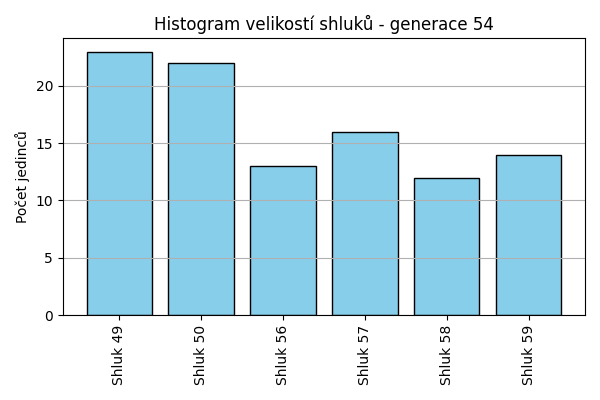
Stabilita mezi generací 53 → 54:
Shluk 58 → 58: 8 jedinců (72.7 %)
Shluk 58 → 50: 1 jedinců (9.1 %)
Shluk 58 → 49: 2 jedinců (18.2 %)
Shluk 50 → 50: 13 jedinců (65.0 %)
Shluk 50 → 59: 2 jedinců (10.0 %)
Shluk 50 → 57: 2 jedinců (10.0 %)
Shluk 50 → 49: 2 jedinců (10.0 %)
Shluk 50 → 56: 1 jedinců (5.0 %)
Shluk 49 → 49: 12 jedinců (70.6 %)
Shluk 49 → 59: 1 jedinců (5.9 %)
Shluk 49 → 58: 2 jedinců (11.8 %)
Shluk 49 → 57: 2 jedinců (11.8 %)
Shluk 56 → 56: 7 jedinců (43.8 %)
Shluk 56 → 49: 3 jedinců (18.8 %)
Shluk 56 → 57: 1 jedinců (6.2 %)
Shluk 56 → 50: 3 jedinců (18.8 %)
Shluk 56 → 59: 2 jedinců (12.5 %)
Shluk 57 → 57: 11 jedinců (50.0 %)
Shluk 57 → 56: 5 jedinců (22.7 %)
Shluk 57 → 50: 3 jedinců (13.6 %)
Shluk 57 → 59: 2 jedinců (9.1 %)
Shluk 57 → 49: 1 jedinců (4.5 %)
Shluk 59 → 50: 2 jedinců (14.3 %)
Shluk 59 → 59: 7 jedinců (50.0 %)
Shluk 59 → 49: 3 jedinců (21.4 %)
Shluk 59 → 58: 2 jedinců (14.3 %)
Jaccardovo mapování a overlap: Generace 53 → 54
- Cluster 58 → 58 (Jaccard: 0.53, Overlap: 0.73)
- Cluster 50 → 50 (Jaccard: 0.45, Overlap: 0.65)
- Cluster 49 → 49 (Jaccard: 0.43, Overlap: 0.71)
- Cluster 56 → 56 (Jaccard: 0.32, Overlap: 0.54)
- Cluster 57 → 57 (Jaccard: 0.41, Overlap: 0.69)
- Cluster 59 → 59 (Jaccard: 0.33, Overlap: 0.50)
Posun centroidů mezi generací 53 → 54:
- Shluk 0: 0.1838
- Shluk 1: 0.1807
- Shluk 2: 0.2656
- Shluk 3: 0.1800
- Shluk 4: 0.1488
- Shluk 5: 0.3015
Generace 55
Stabilita mezi generací 54 → 55:
Shluk 58 → 50: 1 jedinců (8.3 %)
Shluk 58 → 59: 2 jedinců (16.7 %)
Shluk 58 → 58: 7 jedinců (58.3 %)
Shluk 58 → 49: 1 jedinců (8.3 %)
Shluk 58 → 56: 1 jedinců (8.3 %)
Shluk 50 → 50: 13 jedinců (59.1 %)
Shluk 50 → 56: 1 jedinců (4.5 %)
Shluk 50 → 58: 3 jedinců (13.6 %)
Shluk 50 → 57: 3 jedinců (13.6 %)
Shluk 50 → 59: 2 jedinců (9.1 %)
Shluk 49 → 49: 11 jedinců (47.8 %)
Shluk 49 → 58: 3 jedinců (13.0 %)
Shluk 49 → 50: 4 jedinců (17.4 %)
Shluk 49 → 57: 5 jedinců (21.7 %)
Shluk 56 → 56: 10 jedinců (76.9 %)
Shluk 56 → 49: 2 jedinců (15.4 %)
Shluk 56 → 57: 1 jedinců (7.7 %)
Shluk 59 → 59: 11 jedinců (78.6 %)
Shluk 59 → 57: 2 jedinců (14.3 %)
Shluk 59 → 56: 1 jedinců (7.1 %)
Shluk 57 → 59: 4 jedinců (25.0 %)
Shluk 57 → 57: 10 jedinců (62.5 %)
Shluk 57 → 58: 1 jedinců (6.2 %)
Shluk 57 → 56: 1 jedinců (6.2 %)
Jaccardovo mapování a overlap: Generace 54 → 55
- Cluster 58 → 58 (Jaccard: 0.37, Overlap: 0.58)
- Cluster 50 → 50 (Jaccard: 0.48, Overlap: 0.72)
- Cluster 49 → 49 (Jaccard: 0.42, Overlap: 0.79)
- Cluster 56 → 56 (Jaccard: 0.59, Overlap: 0.77)
- Cluster 59 → 59 (Jaccard: 0.50, Overlap: 0.79)
- Cluster 57 → 57 (Jaccard: 0.37, Overlap: 0.62)
Posun centroidů mezi generací 54 → 55:
- Shluk 0: 0.1892
- Shluk 1: 0.1255
- Shluk 2: 0.1268
- Shluk 3: 0.1861
- Shluk 4: 0.2144
- Shluk 5: 0.1568
Generace 56
Stabilita mezi generací 55 → 56:
Shluk 50 → 56: 6 jedinců (33.3 %)
Shluk 50 → 57: 2 jedinců (11.1 %)
Shluk 50 → 60: 1 jedinců (5.6 %)
Shluk 50 → 49: 1 jedinců (5.6 %)
Shluk 50 → 50: 7 jedinců (38.9 %)
Shluk 50 → 59: 1 jedinců (5.6 %)
Shluk 49 → 49: 7 jedinců (50.0 %)
Shluk 49 → 59: 2 jedinců (14.3 %)
Shluk 49 → 57: 1 jedinců (7.1 %)
Shluk 49 → 60: 3 jedinců (21.4 %)
Shluk 49 → 50: 1 jedinců (7.1 %)
Shluk 56 → 56: 7 jedinců (50.0 %)
Shluk 56 → 57: 2 jedinců (14.3 %)
Shluk 56 → 60: 1 jedinců (7.1 %)
Shluk 56 → 50: 2 jedinců (14.3 %)
Shluk 56 → 59: 2 jedinců (14.3 %)
Shluk 59 → 60: 4 jedinců (21.1 %)
Shluk 59 → 57: 4 jedinců (21.1 %)
Shluk 59 → 59: 7 jedinců (36.8 %)
Shluk 59 → 56: 3 jedinců (15.8 %)
Shluk 59 → 50: 1 jedinců (5.3 %)
Shluk 58 → 60: 2 jedinců (14.3 %)
Shluk 58 → 50: 3 jedinců (21.4 %)
Shluk 58 → 57: 5 jedinců (35.7 %)
Shluk 58 → 56: 2 jedinců (14.3 %)
Shluk 58 → 59: 2 jedinců (14.3 %)
Shluk 57 → 60: 4 jedinců (19.0 %)
Shluk 57 → 49: 4 jedinců (19.0 %)
Shluk 57 → 57: 8 jedinců (38.1 %)
Shluk 57 → 50: 2 jedinců (9.5 %)
Shluk 57 → 56: 1 jedinců (4.8 %)
Shluk 57 → 59: 2 jedinců (9.5 %)
Jaccardovo mapování a overlap: Generace 55 → 56
- Cluster 50 → 50 (Jaccard: 0.26, Overlap: 0.44)
- Cluster 49 → 49 (Jaccard: 0.37, Overlap: 0.58)
- Cluster 56 → 56 (Jaccard: 0.27, Overlap: 0.50)
- Cluster 59 → 59 (Jaccard: 0.25, Overlap: 0.44)
- Cluster 58 → 57 (Jaccard: 0.16, Overlap: 0.36)
- Cluster 57 → 57 (Jaccard: 0.23, Overlap: 0.38)
Posun centroidů mezi generací 55 → 56:
- Shluk 0: 0.2222
- Shluk 1: 0.2772
- Shluk 2: 0.2950
- Shluk 3: 0.2289
- Shluk 4: 0.4375
- Shluk 5: 0.3532
Generace 57

Stabilita mezi generací 56 → 57:
Shluk 56 → 57: 3 jedinců (15.8 %)
Shluk 56 → 61: 2 jedinců (10.5 %)
Shluk 56 → 56: 9 jedinců (47.4 %)
Shluk 56 → 59: 1 jedinců (5.3 %)
Shluk 56 → 60: 3 jedinců (15.8 %)
Shluk 56 → 49: 1 jedinců (5.3 %)
Shluk 57 → 60: 7 jedinců (31.8 %)
Shluk 57 → 57: 9 jedinců (40.9 %)
Shluk 57 → 61: 1 jedinců (4.5 %)
Shluk 57 → 56: 2 jedinců (9.1 %)
Shluk 57 → 59: 2 jedinců (9.1 %)
Shluk 57 → 49: 1 jedinců (4.5 %)
Shluk 49 → 49: 8 jedinců (66.7 %)
Shluk 49 → 60: 1 jedinců (8.3 %)
Shluk 49 → 57: 2 jedinců (16.7 %)
Shluk 49 → 61: 1 jedinců (8.3 %)
Shluk 60 → 61: 4 jedinců (26.7 %)
Shluk 60 → 60: 6 jedinců (40.0 %)
Shluk 60 → 57: 3 jedinců (20.0 %)
Shluk 60 → 49: 2 jedinců (13.3 %)
Shluk 59 → 49: 2 jedinců (12.5 %)
Shluk 59 → 59: 8 jedinců (50.0 %)
Shluk 59 → 60: 2 jedinců (12.5 %)
Shluk 59 → 61: 1 jedinců (6.2 %)
Shluk 59 → 57: 3 jedinců (18.8 %)
Shluk 50 → 56: 6 jedinců (37.5 %)
Shluk 50 → 61: 5 jedinců (31.2 %)
Shluk 50 → 59: 3 jedinců (18.8 %)
Shluk 50 → 57: 2 jedinců (12.5 %)
Jaccardovo mapování a overlap: Generace 56 → 57
- Cluster 56 → 56 (Jaccard: 0.33, Overlap: 0.53)
- Cluster 57 → 57 (Jaccard: 0.26, Overlap: 0.41)
- Cluster 49 → 49 (Jaccard: 0.44, Overlap: 0.67)
- Cluster 60 → 60 (Jaccard: 0.21, Overlap: 0.40)
- Cluster 59 → 59 (Jaccard: 0.36, Overlap: 0.57)
- Cluster 50 → 56 (Jaccard: 0.22, Overlap: 0.38)
Posun centroidů mezi generací 56 → 57:
- Shluk 0: 0.2269
- Shluk 1: 0.3022
- Shluk 2: 0.4988
- Shluk 3: 0.5507
- Shluk 4: 0.4036
- Shluk 5: 0.3247
Generace 58
Stabilita mezi generací 57 → 58:
Shluk 57 → 62: 1 jedinců (4.5 %)
Shluk 57 → 59: 1 jedinců (4.5 %)
Shluk 57 → 63: 3 jedinců (13.6 %)
Shluk 57 → 49: 6 jedinců (27.3 %)
Shluk 57 → 61: 5 jedinců (22.7 %)
Shluk 57 → 56: 6 jedinců (27.3 %)
Shluk 60 → 62: 4 jedinců (21.1 %)
Shluk 60 → 59: 6 jedinců (31.6 %)
Shluk 60 → 56: 4 jedinců (21.1 %)
Shluk 60 → 61: 4 jedinců (21.1 %)
Shluk 60 → 63: 1 jedinců (5.3 %)
Shluk 49 → 49: 6 jedinců (42.9 %)
Shluk 49 → 63: 2 jedinců (14.3 %)
Shluk 49 → 61: 1 jedinců (7.1 %)
Shluk 49 → 62: 2 jedinců (14.3 %)
Shluk 49 → 59: 2 jedinců (14.3 %)
Shluk 49 → 56: 1 jedinců (7.1 %)
Shluk 61 → 61: 6 jedinců (42.9 %)
Shluk 61 → 59: 4 jedinců (28.6 %)
Shluk 61 → 63: 2 jedinců (14.3 %)
Shluk 61 → 49: 1 jedinců (7.1 %)
Shluk 61 → 62: 1 jedinců (7.1 %)
Shluk 56 → 56: 6 jedinců (35.3 %)
Shluk 56 → 61: 3 jedinců (17.6 %)
Shluk 56 → 62: 5 jedinců (29.4 %)
Shluk 56 → 59: 2 jedinců (11.8 %)
Shluk 56 → 63: 1 jedinců (5.9 %)
Shluk 59 → 59: 10 jedinců (71.4 %)
Shluk 59 → 63: 2 jedinců (14.3 %)
Shluk 59 → 56: 1 jedinců (7.1 %)
Shluk 59 → 49: 1 jedinců (7.1 %)
Jaccardovo mapování a overlap: Generace 57 → 58
- Cluster 57 → 49 (Jaccard: 0.20, Overlap: 0.43)
- Cluster 60 → 59 (Jaccard: 0.16, Overlap: 0.32)
- Cluster 49 → 49 (Jaccard: 0.27, Overlap: 0.43)
- Cluster 61 → 61 (Jaccard: 0.22, Overlap: 0.43)
- Cluster 56 → 56 (Jaccard: 0.21, Overlap: 0.35)
- Cluster 59 → 59 (Jaccard: 0.34, Overlap: 0.71)
Posun centroidů mezi generací 57 → 58:
- Shluk 0: 0.2142
- Shluk 1: 0.2976
- Shluk 2: 0.4239
- Shluk 3: 0.5076
- Shluk 4: 0.3072
- Shluk 5: 0.3972

Generace 59
Stabilita mezi generací 58 → 59:
Shluk 62 → 63: 2 jedinců (15.4 %)
Shluk 62 → 64: 3 jedinců (23.1 %)
Shluk 62 → 62: 7 jedinců (53.8 %)
Shluk 62 → 59: 1 jedinců (7.7 %)
Shluk 49 → 49: 9 jedinců (64.3 %)
Shluk 49 → 63: 2 jedinců (14.3 %)
Shluk 49 → 64: 2 jedinců (14.3 %)
Shluk 49 → 59: 1 jedinců (7.1 %)
Shluk 61 → 61: 12 jedinců (63.2 %)
Shluk 61 → 59: 5 jedinců (26.3 %)
Shluk 61 → 49: 1 jedinců (5.3 %)
Shluk 61 → 63: 1 jedinců (5.3 %)
Shluk 59 → 59: 13 jedinců (52.0 %)
Shluk 59 → 64: 8 jedinců (32.0 %)
Shluk 59 → 63: 3 jedinců (12.0 %)
Shluk 59 → 61: 1 jedinců (4.0 %)
Shluk 63 → 63: 4 jedinců (36.4 %)
Shluk 63 → 49: 4 jedinců (36.4 %)
Shluk 63 → 61: 1 jedinců (9.1 %)
Shluk 63 → 62: 1 jedinců (9.1 %)
Shluk 63 → 59: 1 jedinců (9.1 %)
Shluk 56 → 62: 4 jedinců (22.2 %)
Shluk 56 → 64: 2 jedinců (11.1 %)
Shluk 56 → 59: 2 jedinců (11.1 %)
Shluk 56 → 49: 5 jedinců (27.8 %)
Shluk 56 → 63: 2 jedinců (11.1 %)
Shluk 56 → 61: 3 jedinců (16.7 %)
Jaccardovo mapování a overlap: Generace 58 → 59
- Cluster 62 → 62 (Jaccard: 0.39, Overlap: 0.58)
- Cluster 49 → 49 (Jaccard: 0.38, Overlap: 0.64)
- Cluster 61 → 61 (Jaccard: 0.50, Overlap: 0.71)
- Cluster 59 → 59 (Jaccard: 0.37, Overlap: 0.57)
- Cluster 63 → 63 (Jaccard: 0.19, Overlap: 0.36)
- Cluster 56 → 49 (Jaccard: 0.16, Overlap: 0.28)
Posun centroidů mezi generací 58 → 59:
- Shluk 0: 0.2078
- Shluk 1: 0.3516
- Shluk 2: 0.3619
- Shluk 3: 0.4306
- Shluk 4: 0.3140
- Shluk 5: 0.3445